Chapter 6: NoSQL & Specialised Databases¶
Relational databases are not the only option. This chapter explains why NoSQL appeared and what BASE means, then tours each family with its leading products: key-value stores (Redis, Valkey, DynamoDB, etcd, RocksDB), document databases (MongoDB and alternatives), wide-column stores (Cassandra, ScyllaDB, Bigtable), graph databases and their languages, time-series, search and vector databases. It also covers in-memory, multi-model, ledger and embedded or mobile databases, and finishes with how to choose the right model and combine several in one system.
6.1 Why NoSQL Appeared — and What BASE Means¶
In the 2000s, giant websites such as Google, Amazon and Facebook had more data and traffic than any single relational server could handle. They built new databases that spread data over thousands of cheap machines, dropped joins and fixed schemas, and sometimes relaxed instant consistency to stay fast and always available. Around 2009 these systems got the catch-all name 'NoSQL', later read as 'Not only SQL'. BASE describes their typical promise: basically available, soft state, eventually consistent.
ACID vs BASE in practice
| ACID (classic relational) | BASE (classic NoSQL) | |
|---|---|---|
| First priority | Correctness of every transaction | Availability and low latency |
| After a write | Everyone sees it immediately | Replicas converge soon |
| Scaling style | Traditionally scale up | Scale out from day one |
| Schema | Defined up front (on write) | Flexible (on read) |
| Joins | Rich joins in the database | Data pre-shaped, few joins |
| Typical use | Payments, inventory | Feeds, carts, sensor data |
These are ends of a spectrum; most modern databases let you mix both.
Think of it like…
A relational database is like a bank branch where every teller checks the central ledger before answering; a BASE system is like a chain of busy cafés that each take orders immediately and reconcile the shared stock list a few seconds later.
Real-world example
The fictional social app ChirpNet stores 2 billion posts. Its relational setup needed constant manual sharding, so it moved timelines to a wide-column store across 120 nodes. A new like might take a second to show for friends on another continent — acceptable for likes, so the team keeps payments and account balances in PostgreSQL, where every read must be exact.
How it works¶
- Data is grouped into 'aggregates' — a whole document, row of columns or value — that the app reads and writes as one unit.
- Aggregates are spread across many nodes by key (partitioning) and copied to several nodes (replication).
- Writes are accepted by one or a few replicas quickly and propagated to the others in the background.
- Readers may briefly see older data (soft state) until replicas converge (eventual consistency); many systems let you tune this per request.
- Applications avoid joins by storing data in the shape each query needs, accepting some duplication.
Who uses it
Backend and platform engineers, architects at web-scale companies, and anyone choosing a database for high-volume, flexible or globally distributed data meet NoSQL trade-offs.
Key takeaway
Explain NoSQL as a family of data models (key-value, document, wide-column, graph) chosen for scale, flexibility or access patterns — not as 'no SQL at all'; many NoSQL databases now offer SQL-like languages and ACID transactions.
Going deeper
- The modern 'NoSQL' label dates from a June 2009 San Francisco meetup about open-source distributed non-relational databases; the hashtag stuck and was later reinterpreted as 'Not only SQL'.
- Two papers shaped the field: Google's Bigtable (OSDI 2006) introduced the sparse wide-column model, and Amazon's Dynamo (SOSP 2007) showed consistent hashing, quorum replication and eventual consistency in production.
- BASE was popularised by Dan Pritchett's 2008 ACM Queue article 'BASE: An ACID Alternative', which described trading immediate consistency for availability and partition tolerance at eBay scale.
- The lines have blurred: MongoDB added multi-document ACID transactions in 4.0 (2018) and DynamoDB added transactions the same year, while PostgreSQL, MySQL and SQL Server gained strong JSON support.
- NoSQL designs move work into the application: you model data around known queries, duplicate data instead of joining, and handle conflicts or stale reads deliberately.
- Many NoSQL systems expose tunable consistency — for example Cassandra's ONE, QUORUM and ALL levels or DynamoDB's strongly consistent reads — so each request picks its own trade-off.
Common mistakes & misconceptions
- Believing NoSQL means 'no schema': the schema still exists in your code and queries; changing it later still needs migrations or careful versioning.
- Choosing NoSQL for scale you do not have: one PostgreSQL server handles many thousands of transactions per second, far beyond most new apps.
- Assuming every NoSQL database is eventually consistent: many (MongoDB primaries, HBase, etcd, FoundationDB) are strongly consistent by default.
Try it: Feel eventual consistency vs strong consistency (DynamoDB Local or AWS CLI)¶
# eventually consistent read (default, half the cost)
aws dynamodb get-item --table-name Posts --key '{"id":{"S":"p1"}}'
# strongly consistent read of the same item
aws dynamodb get-item --table-name Posts --key '{"id":{"S":"p1"}}' --consistent-read
Key databases, concepts, languages, tools & standards¶
| Name | What it does | Example |
|---|---|---|
| Eventual consistency Distributed systems · Concept · Current · Intermediate · General |
Guarantee that if writes stop, all replicas eventually return the same value, though reads may briefly be stale. | A user changes their profile photo; friends in Asia see the old photo for about a second. |
| Soft state BASE model · Concept · Current · Intermediate · General |
Idea that the system's state may change over time without new input, as replicas exchange updates and converge. | A follower count drifts from 1,203 to 1,207 as background replication catches up, with no new follows. |
| Aggregate-oriented model Martin Fowler and Pramod Sadalage, 'NoSQL Distilled' · Concept · Current · Intermediate · General |
Storing related data as one unit (document, row, value) that is read, written and distributed together. | An order document holds its line items and address, so loading an order is one read with no joins. |
| Schema-on-read NoSQL and data lakes · Concept · Current · Intermediate · General |
Data is stored without enforcing a fixed structure; the reading code interprets it, so structure can evolve gradually. | Old user documents lack a 'timezone' field, so the app treats a missing value as UTC. |
| Horizontal scaling by default NoSQL design principle · Concept · Current · Beginner · General |
Designing the database from day one to spread data and load over many commodity servers. | ChirpNet grows from 60 to 120 nodes during a viral event without changing application code. |
| Tunable consistency Cassandra, DynamoDB, Cosmos DB and others · Feature · Current · Intermediate · General |
Choosing consistency per request — faster and possibly stale, or slower and guaranteed current. | Likes are read at consistency level ONE, while account settings use QUORUM. |
| Bigtable paper Google, OSDI 2006 · Resource · Current · Intermediate · Wide-column |
Paper describing Google's sparse, distributed, sorted map — the blueprint for HBase and the wide-column model. | A database course assigns the Bigtable paper to explain row keys, column families and tablets. |
| Dynamo paper Amazon, SOSP 2007 · Resource · Current · Intermediate · Key-value |
Paper on Amazon's highly available key-value store: consistent hashing, quorums, vector clocks and hinted handoff. | Cassandra's ring partitioning and Riak's design both trace directly to ideas in the Dynamo paper. |
| NoSQL Distilled Pramod Sadalage and Martin Fowler, 2012 · Resource · Current · Beginner · General |
Short, readable book introducing NoSQL models, aggregates, distribution and polyglot persistence. | A bootcamp student reads it in a weekend before designing a document schema for a project. |
| NoSQL with ACID MongoDB, DynamoDB, FoundationDB and others · Concept · Current · Intermediate · General |
Trend of non-relational databases adding multi-item ACID transactions, narrowing the gap with relational systems. | A game moves gold between two player documents in one MongoDB transaction so coins are never duplicated. |
| Denormalisation cost NoSQL data modelling · Concept · Current · Intermediate · General |
Duplicating data for fast reads means every copy must be updated when the original changes. | When a user renames themselves, ChirpNet must update the name stored inside 30,000 old comments. |
6.2 Redis, Valkey, Memcached and the Licence Split¶
Redis is an in-memory key-value store that answers in well under a millisecond, used for caching, sessions, leaderboards, queues and rate limits. Unlike a simple cache it understands data structures such as lists, hashes, sets and sorted sets. In 2024 Redis changed to non-open-source licences, and the community forked it as Valkey under the Linux Foundation; in 2025 Redis added the open-source AGPL option back. Memcached is the older, simpler pure cache.
Think of it like…
Redis is like a chef's countertop: small compared with the pantry (your main database), but everything on it is within arm's reach, already sorted into bowls, trays and stacks.
Real-world example
The fictional game studio PixelForge keeps its global leaderboard in a sorted set: ZADD after each match and ZREVRANGE to show the top 100 — 50,000 updates a second on one node. Player sessions live in hashes with a 30-minute expiry. When its cloud provider offered Valkey at a lower price, PixelForge switched without changing a line of code.
How it works¶
- Clients send commands over the simple text-based RESP protocol to port 6379.
- A main thread executes commands one at a time on data held in RAM, so each command is atomic; extra I/O threads handle networking.
- Keys can expire automatically (TTL), and an eviction policy such as allkeys-lru removes keys when memory fills.
- Optional persistence saves RDB snapshots and/or an append-only file (AOF) so data survives restarts.
- Replicas, Sentinel (automatic failover) or Cluster mode (16,384 hash slots across shards) add availability and scale.
Who uses it
Backend developers, SREs and cloud engineers use Redis or Valkey in almost every web stack; it appears in system-design interviews for caching, rate limiting and leaderboards.
Key takeaway
Know the licence timeline: BSD until 7.2; RSALv2/SSPL from 7.4 (March 2024); Valkey fork (March 2024, BSD); Redis 8 adds AGPLv3 as an option (May 2025).
Going deeper
- A single Redis or Valkey node commonly serves hundreds of thousands of simple operations per second with sub-millisecond latency; the limit is usually network and memory, not CPU.
- Cluster mode splits keys into 16,384 hash slots by CRC16 of the key; hash tags such as {user42} force related keys into the same slot so multi-key commands work.
- Persistence options: RDB point-in-time snapshots (compact, may lose minutes of writes) and AOF with appendfsync everysec (lose at most about one second); many caches disable both.
- Redis 8 folded the former Redis Stack modules — JSON, the Redis Query Engine with vector search, time series and probabilistic structures — into the core, and added a vector set data type.
- Valkey is backed by AWS, Google Cloud, Oracle, Ericsson, Snap and others; AWS ElastiCache and MemoryDB, and Google Memorystore, offer Valkey at lower prices than their Redis-branded options.
- Memcached (2003, written for LiveJournal) is multithreaded, stores only strings with a default maximum item size of 1 MB, and has no persistence or replication — simple and very fast for pure caching.
Common mistakes & misconceptions
- Using Redis as the only copy of important data without persistence and replication: a restart can wipe everything.
- Running KEYS * in production: it blocks the single command thread while scanning every key; use SCAN instead.
- Forgetting maxmemory and an eviction policy: the server can run out of RAM or start rejecting writes.
Try it: Run Valkey (or Redis) locally and build a leaderboard¶
docker run -d --name kv -p 6379:6379 valkey/valkey:latest
docker exec -it kv valkey-cli
ZADD leaderboard 3200 ana 2950 ben 4100 chen
ZREVRANGE leaderboard 0 2 WITHSCORES
SET session:ana '{"cart":3}' EX 1800
TTL session:ana
Key databases, concepts, languages, tools & standards¶
| Name | What it does | Example |
|---|---|---|
| Redis Redis Ltd. (RSALv2 / SSPLv1 / AGPLv3) · Database · Current · Beginner · Key-value |
In-memory data-structure store used as cache, session store, message broker and lightweight database, with optional persistence. | PixelForge keeps its live leaderboard and player sessions in Redis, answering in under a millisecond. |
| Valkey Linux Foundation (BSD 3-Clause) · Database · Current · Beginner · Key-value |
Open-source fork of Redis 7.2.4 created in 2024 after Redis's licence change; command- and protocol-compatible. | PixelForge swaps its endpoint to ElastiCache for Valkey and its existing Redis client libraries keep working. |
| Redis data structures Redis / Valkey · Data structure · Current · Beginner · Key-value |
Strings, lists, hashes, sets, sorted sets, streams, bitmaps and HyperLogLogs, each with atomic commands. | INCR page:views counts visits; LPUSH and BRPOP build a simple job queue. |
| Sorted set Redis / Valkey · Data structure · Current · Intermediate · Key-value |
Set of unique members each with a numeric score, kept ordered for fast ranking and range queries. | ZINCRBY leaderboard 25 ana adds points; ZREVRANK leaderboard ana shows her current position. |
| TTL and eviction policies Redis / Valkey · Feature · Current · Beginner · Key-value |
Keys can expire after a set time, and policies like allkeys-lru decide what to drop when memory is full. | SET otp:ana 482913 EX 300 makes a one-time code vanish automatically after five minutes. |
| RDB and AOF persistence Redis / Valkey · Feature · Current · Intermediate · Key-value |
Snapshot files and an append-only log of writes that let in-memory data survive restarts. | With appendfsync everysec, a crash loses at most about one second of leaderboard updates. |
| Redis Cluster Redis / Valkey · Feature · Current · Advanced · Key-value |
Built-in sharding over 16,384 hash slots with replicas per shard and automatic failover. | A six-node cluster — three primaries and three replicas — spreads 200 GB of sessions across shards. |
| Redis Sentinel Redis / Valkey · Tool · Current · Intermediate · Key-value |
Monitoring processes that detect a failed primary, promote a replica and tell clients the new address. | Three Sentinels agree the primary is down and promote a replica within about ten seconds. |
| RESP protocol Redis / Valkey · Protocol · Current · Intermediate · Key-value |
REdis Serialization Protocol: a simple text-based request/response format; RESP3 adds richer reply types. | Typing PING into a raw TCP connection on port 6379 returns +PONG, a RESP simple string. |
| Redis Query Engine and vector sets Redis Ltd. (Redis 8) · Feature · Emerging · Intermediate · Vector |
Secondary indexing, full-text and vector similarity search over hashes and JSON, plus a native vector set type. | A support bot stores answer embeddings in Redis and finds the closest five in a few milliseconds. |
| Memcached Memcached project (BSD) · Database · Current · Beginner · Key-value |
Simple, multithreaded, in-memory key-value cache without persistence or data structures, created in 2003. | A news site caches rendered article HTML in Memcached for 60 seconds to absorb traffic spikes. |
| Amazon ElastiCache Amazon Web Services · Service · Current · Intermediate · Key-value |
Managed in-memory caching service for Valkey, Redis OSS and Memcached, including a serverless option. | PixelForge runs ElastiCache Serverless for Valkey and pays per gigabyte stored and requests served. |
| Amazon MemoryDB Amazon Web Services · Service · Current · Advanced · Key-value |
Redis/Valkey-compatible in-memory database with a durable multi-AZ transaction log, usable as a primary database. | A game stores player inventories in MemoryDB, getting microsecond reads without losing data on node failure. |
| Dragonfly DragonflyDB (BSL) · Database · Emerging · Advanced · Key-value |
Multithreaded, Redis- and Memcached-compatible in-memory store designed to use all CPU cores on one large machine. | A team replaces a 12-shard Redis cluster with one large Dragonfly instance in a benchmark trial. |
| Garnet Microsoft Research (MIT) · Database · Emerging · Advanced · Key-value |
Open-source cache-store from Microsoft, written in C#, that speaks the RESP protocol for Redis-client compatibility. | An Azure-based team tests Garnet as a drop-in RESP server for its .NET services. |
6.3 DynamoDB, etcd, FoundationDB and Other Key-Value Stores¶
A key-value store keeps data as pairs: a unique key and the value stored under it, like a giant dictionary. Some are huge cloud services (Amazon DynamoDB), some are small, strongly consistent stores for configuration (etcd, ZooKeeper), and some are storage engines that other databases are built on (RocksDB, LevelDB). Simplicity makes them fast and easy to scale, but you can only look things up the ways you planned for.
Think of it like…
A key-value store is like a coat check: hand over ticket 417 and you get exactly that coat back instantly — but you cannot ask the attendant for 'all the blue coats'.
Real-world example
The fictional food-delivery app DashBite stores orders in DynamoDB with partition key customer_id and sort key order_time, so 'this customer's last ten orders' is one fast query. On a Friday evening traffic jumps from 2,000 to 40,000 requests per second; on-demand capacity absorbs it with single-digit-millisecond reads. Meanwhile, DashBite's Kubernetes clusters keep all their own configuration in etcd.
How it works¶
- Every item is addressed by a key; the store hashes or orders the key to find the partition or node that owns it.
- Distributed stores replicate each partition (DynamoDB keeps three copies across Availability Zones; etcd uses Raft across 3 or 5 members).
- Reads and writes by key are fast; range queries work only where keys are ordered (DynamoDB sort keys, RocksDB, FoundationDB).
- Secondary indexes or extra tables support other access patterns, at the cost of extra writes.
- Embedded engines such as RocksDB run inside another program and store data on local disk using LSM-trees.
Who uses it
Serverless and cloud developers (DynamoDB), Kubernetes and platform engineers (etcd), database builders (RocksDB, FoundationDB) and ad-tech or fraud teams (Aerospike) rely on key-value stores.
Key takeaway
For DynamoDB, memorise: partition key (+ optional sort key), 400 KB maximum item size, RCUs/WCUs or on-demand billing, GSIs for extra access patterns, and Streams for change events.
Going deeper
- DynamoDB (2012) descends from ideas in the Dynamo paper but uses leader-based Multi-Paxos per partition; each partition handles up to 3,000 read units and 1,000 write units per second and about 10 GB.
- One RCU is one strongly consistent read per second of up to 4 KB (or two eventually consistent reads); one WCU is one write per second of up to 1 KB; on-demand pricing was cut by about half in late 2024.
- DynamoDB transactions cover up to 100 items; global tables replicate across Regions, and a multi-Region strong consistency option was added in 2025 alongside the classic last-writer-wins mode.
- etcd stores Kubernetes' entire cluster state; it uses Raft, keeps a default 2 GB storage quota, and should run on 3 or 5 members with fast SSDs because every write is fsynced.
- RocksDB, Meta's 2012 fork of Google's LevelDB, is an embedded LSM-tree engine underneath MyRocks, TiKV, YugabyteDB, Kafka Streams state stores and many more systems.
- FoundationDB, bought by Apple in 2015 and open-sourced in 2018, offers an ordered key-value store with strict serializable ACID transactions and is famous for deterministic simulation testing.
Common mistakes & misconceptions
- Choosing a low-cardinality DynamoDB partition key (such as status or country): traffic piles onto a few partitions and gets throttled.
- Using Scan for normal queries: it reads the whole table and costs capacity for every item; design keys or indexes for each access pattern.
- Storing large blobs in etcd or ZooKeeper: they are for small coordination data; large values slow the whole cluster.
Try it: Use DynamoDB Local and etcd on your machine¶
docker run -d -p 8000:8000 amazon/dynamodb-local
aws dynamodb create-table --endpoint-url http://localhost:8000 --table-name Orders \
--attribute-definitions AttributeName=pk,AttributeType=S AttributeName=sk,AttributeType=S \
--key-schema AttributeName=pk,KeyType=HASH AttributeName=sk,KeyType=RANGE \
--billing-mode PAY_PER_REQUEST
# etcd: put and get a key
etcdctl put /config/featureX on && etcdctl get /config/featureX
Key databases, concepts, languages, tools & standards¶
| Name | What it does | Example |
|---|---|---|
| Amazon DynamoDB Amazon Web Services · Service · Current · Beginner · Key-value |
Serverless key-value and document database with single-digit-millisecond latency at virtually any scale and pay-per-request billing. | DashBite stores every order in DynamoDB and handles a 20x Friday spike without capacity planning. |
| RCUs, WCUs and on-demand mode Amazon DynamoDB · Metric · Current · Intermediate · Key-value |
Capacity units measuring reads and writes; provisioned mode buys them in advance, on-demand bills per request. | A steady 500 writes/s workload is cheaper provisioned; a spiky new app starts on-demand. |
| DynamoDB Streams Amazon DynamoDB · Feature · Current · Intermediate · Key-value |
Time-ordered log of item changes kept for 24 hours, used to trigger Lambda functions or replicate data. | Each new order in the stream triggers a Lambda that sends the restaurant a notification. |
| DynamoDB global tables Amazon DynamoDB · Feature · Current · Advanced · Key-value |
Multi-Region, multi-active replication of a table, with eventual or multi-Region strong consistency options. | DashBite serves Europe and the US from local Regions, and either can take over if the other fails. |
| DynamoDB Accelerator (DAX) Amazon Web Services · Service · Current · Intermediate · Key-value |
In-memory write-through cache in front of DynamoDB, cutting read latency to microseconds for repeated reads. | Restaurant menus read millions of times an hour are served from DAX instead of the table. |
| etcd CNCF (graduated project) · Database · Current · Intermediate · Key-value |
Small, strongly consistent key-value store using Raft, best known for holding Kubernetes cluster state. | kubectl apply writes a Deployment object; the API server stores it in etcd under /registry/deployments/... |
| Apache ZooKeeper Apache Software Foundation · Tool · Legacy · Intermediate · Key-value |
Coordination service for configuration, leader election and locks; Kafka removed its dependency in Kafka 4.0 (2025). | An older Hadoop cluster still uses ZooKeeper to elect the active HDFS NameNode. |
| Consul KV HashiCorp (IBM) · Tool · Current · Intermediate · Key-value |
Key-value store built into HashiCorp Consul for service configuration and feature flags, replicated with Raft. | consul kv put app/checkout/timeout 3s changes a timeout that services pick up immediately. |
| FoundationDB Apple (open source, Apache 2.0) · Database · Current · Advanced · Key-value |
Distributed ordered key-value store with strict serializable ACID transactions, used as a foundation for other data layers. | Snowflake stores its metadata in FoundationDB, and Apple uses it behind CloudKit. |
| Aerospike Aerospike Inc. · Database · Current · Advanced · Key-value |
Distributed key-value database keeping indexes in RAM and data on SSDs for predictable sub-millisecond reads. | An ad-tech bidder looks up a user profile in Aerospike within 1 ms before bidding. |
| Riak KV Basho (defunct), now community-maintained · Database · Legacy · Advanced · Key-value |
Dynamo-inspired, highly available key-value store popular in the 2010s; its company closed in 2017. | A legacy messaging system still runs Riak, and the team plans a move to Cassandra. |
| DynamoDB Local Amazon Web Services · Tool · Current · Beginner · Key-value |
Free downloadable version of DynamoDB for developing and testing on your own machine without an AWS bill. | docker run -p 8000:8000 amazon/dynamodb-local lets students practise table design offline. |
6.4 Document Databases — MongoDB and Its Alternatives¶
A document database stores each record as a self-contained document, usually JSON-like, with nested fields and lists. Documents in the same collection can have different fields, so the structure can change as the app grows. MongoDB is the best-known document database; others include Couchbase, Google Firestore, Amazon DocumentDB and PostgreSQL's JSONB column type.
Think of it like…
A document database is like a filing cabinet of complete folders: each customer's folder holds their details, addresses and past orders together, so you grab one folder instead of visiting five different drawers.
Real-world example
Elena builds the fictional recipe site CookCircle. Each recipe is one MongoDB document with a title, a list of ingredients, steps and embedded ratings. Loading a recipe page is a single read by _id. An aggregation pipeline computes 'top 10 vegan recipes this week', and a sharded cluster spreads 40 million recipes across three shards.
How it works¶
- The app sends JSON-like documents; the database stores them in a binary form (BSON in MongoDB) inside collections.
- Every document has a unique _id; secondary indexes can cover any field, including nested fields and arrays.
- Queries filter, project and sort documents; aggregation pipelines chain stages such as $match, $group and $lookup.
- A replica set keeps copies on several nodes; one primary takes writes and elects a new primary if it fails.
- Sharding splits a collection by a shard key across replica sets, with routers (mongos) directing each query.
Who uses it
Full-stack and mobile developers, content and catalogue platforms, gaming and IoT companies use document databases; MongoDB skills are common in job ads for JavaScript and Python developers.
Key takeaway
The core modelling question is embed or reference: embed data read together and bounded in size; reference data that is shared, large or unbounded (and remember the 16 MB document limit).
Going deeper
- MongoDB (2009) stores BSON documents up to 16 MB, supports multi-document ACID transactions since 4.0 (2018) and across shards since 4.2; MongoDB 8.0 (October 2024) focused on performance.
- MongoDB moved to the Server Side Public License in October 2018, so cloud providers cannot offer it as a service without open-sourcing their stack; this led to compatible alternatives such as Amazon DocumentDB.
- MongoDB Atlas, the company's managed cloud on AWS, Azure and Google Cloud, adds Lucene-based Atlas Search and Atlas Vector Search; MongoDB bought embedding-model company Voyage AI in 2025.
- Replica sets elect a primary using a Raft-like protocol; write concern (for example w: 'majority') and read concern control how durable and fresh each operation is.
- Microsoft open-sourced DocumentDB in 2025 — a MongoDB-compatible engine built as PostgreSQL extensions — and it joined the Linux Foundation; FerretDB 2.0 uses it to offer a MongoDB-compatible API on Postgres.
- PostgreSQL's JSONB (since 9.4, 2014) stores parsed binary JSON with GIN indexing and SQL/JSON path queries, often enough when you need a few flexible fields next to relational data.
Common mistakes & misconceptions
- Embedding unbounded arrays (every comment ever in one post document): documents grow towards 16 MB and updates slow down; reference instead.
- Choosing a monotonically increasing shard key such as a timestamp: all inserts hit one shard; use a hashed or compound key.
- Assuming 'MongoDB-compatible' services behave identically: DocumentDB, Cosmos DB and Firestore support different subsets of operators and features.
Try it: Run MongoDB locally and try an aggregation¶
docker run -d --name mongo -p 27017:27017 mongo:8
docker exec -it mongo mongosh
use cookcircle
db.recipes.insertMany([{title:'Dal', tags:['vegan'], rating:4.7},{title:'Pesto', tags:['veg'], rating:4.2}])
db.recipes.aggregate([{ $match:{tags:'vegan'} }, { $sort:{rating:-1} }, { $limit:10 }])
Key databases, concepts, languages, tools & standards¶
| Name | What it does | Example |
|---|---|---|
| MongoDB MongoDB Inc. (SSPL / commercial) · Database · Current · Beginner · Document |
The most popular document database: flexible JSON-like documents, rich queries, replication, sharding and ACID transactions. | CookCircle stores 40 million recipe documents in MongoDB and serves each page with one read. |
| BSON MongoDB Inc. · Format · Current · Intermediate · Document |
Binary JSON format adding types such as dates, 64-bit integers, decimals and ObjectIds; documents can be up to 16 MB. | createdAt is stored as a BSON Date, so range queries on dates sort correctly. |
| MQL and the aggregation pipeline MongoDB Inc. · Language · Current · Intermediate · Document |
MongoDB Query Language plus pipelines of stages ($match, $group, $lookup, $project) for analytics and transformations. | A pipeline groups this week's ratings by recipe and returns the ten best vegan dishes. |
| Replica set MongoDB · Feature · Current · Intermediate · Document |
Group of MongoDB nodes holding the same data, with one elected primary for writes and secondaries for failover. | When the primary's server dies, a secondary is elected within about 10-12 seconds and writes resume. |
| Sharded cluster MongoDB · Feature · Current · Advanced · Document |
MongoDB deployment splitting collections across replica-set shards by shard key, with mongos routers and config servers. | A hashed _id shard key spreads CookCircle's recipes evenly over three shards. |
| Multi-document transactions MongoDB 4.0+ (2018) · Feature · Current · Intermediate · Document |
ACID transactions spanning several documents and collections, extended to sharded clusters in 4.2. | Moving a recipe between two cookbooks updates both documents atomically or not at all. |
| MongoDB Atlas MongoDB Inc. · Service · Current · Beginner · Document |
MongoDB's managed cloud service on AWS, Azure and Google Cloud, with search, vector search, triggers and backups. | Elena launches a free Atlas cluster for development and upgrades to a dedicated tier at launch. |
| Atlas Search and Vector Search MongoDB Inc. · Feature · Current · Intermediate · Search |
Full-text (Lucene-based) and vector similarity search integrated into MongoDB queries via $search and $vectorSearch. | Searching 'quick spicy noodles' combines keyword and vector results to suggest the most relevant recipes. |
| Couchbase Couchbase Inc. (private since 2025) · Database · Current · Intermediate · Document |
Distributed document database with a built-in memory cache, SQL++ query language and mobile sync; Capella is its cloud service. | An airline serves seat maps from Couchbase's memory-first cache with sub-millisecond reads. |
| Google Cloud Firestore Google (Firebase) · Service · Current · Beginner · Document |
Serverless document database with real-time listeners and offline sync for mobile and web apps. | A chat app's messages appear instantly on all devices through Firestore snapshot listeners. |
| Amazon DocumentDB Amazon Web Services · Service · Current · Intermediate · Document |
Managed document database implementing the MongoDB API on AWS's own storage engine rather than MongoDB code. | A team moves a MongoDB 5-era app to DocumentDB after confirming all its operators are supported. |
| DocumentDB (open source) Microsoft, Linux Foundation (MIT) · Database · Emerging · Advanced · Document |
Open-source, MongoDB-compatible document engine built as PostgreSQL extensions, released in 2025. | A company runs a MongoDB-compatible API on its existing Postgres platform using DocumentDB. |
| FerretDB FerretDB Inc. (Apache 2.0) · Tool · Emerging · Intermediate · Document |
Open-source proxy that speaks the MongoDB wire protocol and stores data in PostgreSQL with the DocumentDB extension. | An app built with the MongoDB driver runs on FerretDB backed by managed Postgres, avoiding SSPL. |
| PostgreSQL JSONB PostgreSQL Global Development Group · Feature · Current · Intermediate · Document |
Binary JSON column type with GIN indexes and SQL/JSON path queries, a common alternative to a separate document database. | A products table keeps fixed columns for price and SKU and a JSONB column for category-specific attributes. |
| Apache CouchDB Apache Software Foundation · Database · Current · Intermediate · Document |
Document database with an HTTP/JSON API and multi-master replication designed for offline-first sync. | Field clinics sync patient visit documents to a central CouchDB whenever they get internet access. |
6.5 Wide-Column Stores — Cassandra 5, ScyllaDB, HBase and Bigtable¶
Wide-column databases store data in tables of rows, but each row can have many columns grouped by a partition key and sorted by clustering columns, and the data is spread across many machines. They are built for huge volumes of fast writes — billions of events, messages or sensor readings — across data centres, with no single point of failure. You design tables around the exact queries you will run.

Think of it like…
A wide-column store is like a postal sorting centre: every letter is routed by postcode (partition key) to one sorting bay, where it is kept in date order (clustering column), so 'all letters for postcode 1012 this week' is one quick grab.
Real-world example
The fictional smart-meter company GridPulse collects a reading every 15 minutes from 5 million homes — about 480 million rows a day. It stores them in Apache Cassandra 5 with partition key (meter_id, day) and clustering column reading_time. A six-node cluster in each of two data centres absorbs the writes, and fetching one home's day of readings is a single-partition query that takes a few milliseconds.
How it works¶
- Nodes form a ring; each owns token ranges, and the partition key's hash decides which nodes store a row.
- A client sends a write to any node, which acts as coordinator and forwards it to the replicas (often 3 per data centre).
- Each replica appends to a commit log and an in-memory memtable, later flushed to immutable SSTables on disk.
- The consistency level (ONE, QUORUM, LOCAL_QUORUM, ALL) decides how many replicas must answer before success.
- Background compaction merges SSTables, drops overwritten data and expired tombstones; repair keeps replicas in sync.
Who uses it
Platform and data engineers at messaging, IoT, streaming, finance and e-commerce companies run wide-column stores; Apple, Netflix and Discord are well-known large users of Cassandra or ScyllaDB.
Key takeaway
Remember 'query-first design': in Cassandra you typically create one table per query pattern, duplicating data, because there are no joins and only limited secondary indexing.
Going deeper
- Cassandra was built at Facebook in 2008, combining Dynamo-style partitioning and replication with a Bigtable-style storage model, and became an Apache top-level project in 2010.
- Cassandra 5.0 (September 2024) added Storage-Attached Indexes (SAI), a vector type with approximate nearest-neighbour search, trie-based memtables and SSTables, the Unified Compaction Strategy and dynamic data masking.
- ScyllaDB rewrote Cassandra in C++ on the Seastar framework with a shard-per-core design; in late 2024 it stopped releasing an open-source edition and moved to a single source-available release.
- Deletes write tombstones, markers that hide data until compaction removes them after gc_grace_seconds (10 days by default); millions of tombstones in one partition make reads slow or fail.
- Google Bigtable (paper 2006, cloud service 2015) supports the HBase API and has added GoogleSQL queries; Apache HBase runs a similar model on Hadoop's HDFS with ZooKeeper coordination.
- IBM acquired DataStax, the main commercial Cassandra company behind Astra DB, in 2025; AWS offers Amazon Keyspaces, a serverless Cassandra-compatible service.
Common mistakes & misconceptions
- Creating huge partitions (for example all readings for a meter forever): keep partitions to tens of megabytes by adding a time bucket such as day to the key.
- Using Cassandra like a relational database with ALLOW FILTERING everywhere: queries then scan the cluster; model tables for each query instead.
- Skipping regular repair: replicas drift apart and deleted data can reappear ('zombie' data) after tombstones expire.
Try it: Run Cassandra 5 and create a time-series table¶
docker run -d --name cass -p 9042:9042 cassandra:5
docker exec -it cass cqlsh
CREATE KEYSPACE grid WITH replication = {'class':'SimpleStrategy','replication_factor':1};
CREATE TABLE grid.readings (meter_id text, day date, ts timestamp, kwh double,
PRIMARY KEY ((meter_id, day), ts)) WITH CLUSTERING ORDER BY (ts DESC);
Key databases, concepts, languages, tools & standards¶
| Name | What it does | Example |
|---|---|---|
| Apache Cassandra Apache Software Foundation · Database · Current · Intermediate · Wide-column |
Distributed wide-column database with masterless replication across data centres, tuned for very high write throughput. | GridPulse writes 480 million meter readings a day into two six-node Cassandra data centres. |
| Cassandra 5.0 Apache Software Foundation, Sept 2024 · Database · Current · Intermediate · Wide-column |
Major release adding Storage-Attached Indexes, vector search, trie-based storage and the Unified Compaction Strategy. | After upgrading to 5.0, GridPulse adds an SAI index on region instead of maintaining a second table. |
| CQL (Cassandra Query Language) Apache Cassandra · Language · Current · Beginner · Wide-column |
SQL-like language for Cassandra with CREATE TABLE, INSERT and SELECT, but no joins and key-based filtering. | SELECT kwh FROM readings WHERE meter_id='M17' AND day='2026-10-08'; reads one partition. |
| Partition key and clustering columns Cassandra / ScyllaDB · Concept · Current · Intermediate · Wide-column |
The partition key decides which nodes store a row; clustering columns sort rows inside that partition. | PRIMARY KEY ((meter_id, day), ts) keeps one meter's day together, sorted by time. |
| Consistency levels Cassandra / ScyllaDB · Feature · Current · Intermediate · Wide-column |
Per-query setting for how many replicas must respond, such as ONE, QUORUM, LOCAL_QUORUM or ALL. | Writes and reads at LOCAL_QUORUM with three replicas give consistent results within one data centre. |
| Storage-Attached Indexes (SAI) Apache Cassandra 5 · Feature · Emerging · Advanced · Wide-column |
Secondary indexes stored alongside each SSTable, allowing efficient filtering on non-key and vector columns. | CREATE INDEX ON readings (region) USING 'sai'; lets analysts filter by region without a new table. |
| Compaction strategies Cassandra / ScyllaDB · Algorithm · Current · Advanced · Wide-column |
Ways of merging SSTables — size-tiered, leveled, time-window and unified — trading write, read and space costs. | Time-window compaction groups meter readings by day so whole old files can be dropped when TTLs expire. |
| Gossip protocol Cassandra / ScyllaDB · Protocol · Current · Advanced · Wide-column |
Peer-to-peer protocol by which nodes exchange membership and health information every second. | When a node fails, gossip spreads the news so coordinators stop sending it requests. |
| ScyllaDB ScyllaDB Inc. (source-available since 2024) · Database · Current · Intermediate · Wide-column |
Cassandra- and DynamoDB-API-compatible database written in C++ with a shard-per-core architecture for low tail latency. | A chat company replaces 72 Cassandra nodes with a much smaller ScyllaDB cluster and lowers p99 latency. |
| Apache HBase Apache Software Foundation · Database · Legacy · Advanced · Wide-column |
Bigtable-style wide-column database on Hadoop HDFS, still used in established Hadoop estates. | A bank's older Hadoop platform stores ten years of transaction history in HBase. |
| Google Cloud Bigtable Google Cloud · Service · Current · Intermediate · Wide-column |
Google's managed wide-column database behind many Google services, with HBase API compatibility and SQL queries. | An ad-tech firm stores 2 PB of user events in Bigtable with single-digit-millisecond lookups. |
| Amazon Keyspaces Amazon Web Services · Service · Current · Intermediate · Wide-column |
Serverless, Cassandra-compatible managed service where you pay per request and storage. | A team migrates a small Cassandra cluster to Keyspaces and stops managing nodes and repairs. |
| DataStax Astra DB DataStax (IBM) · Service · Current · Intermediate · Wide-column |
Serverless database service based on Cassandra, marketed for generative-AI apps with vector search. | A start-up stores document chunks and embeddings in Astra DB for a retrieval chatbot. |
| nodetool repair Apache Cassandra · Command · Current · Advanced · Wide-column |
Anti-entropy operation that compares replicas with Merkle trees and fixes differences. | GridPulse runs incremental repair on each node weekly, well inside the 10-day gc_grace window. |
6.6 Graph Databases and Graph Query Languages¶
A graph database stores things (nodes) and the relationships between them (edges) as first-class data. Questions like 'friends of friends', 'shortest route' or 'which accounts share a device with a known fraudster' become quick walks along edges instead of many expensive joins. There are two main styles: property graphs (Neo4j and most products) and RDF triple stores used for linked data and knowledge graphs.
Think of it like…
A graph database is like a detective's pinboard with photos joined by red string: to find connections you follow the strings directly instead of re-reading every file in the cabinet.
Real-world example
Investigators at the fictional bank Westmoor use Neo4j to model customers, cards, phones and devices. A Cypher query finds every account within three hops of a confirmed fraudster that shares a device or phone number — a question that needed a 12-table SQL join and 40 seconds before, and now returns in under 100 ms. Twenty-three linked accounts are frozen the same afternoon.
How it works¶
- Model the domain as nodes with labels (Person, Card, Device) and relationships with types (OWNS, USES), each holding properties.
- Load data and create indexes on the properties used to find starting nodes, such as account number.
- Write a pattern query: find start nodes by index, then traverse relationships hop by hop.
- Use graph algorithms (shortest path, PageRank, community detection) for analytics across the whole graph.
- For RDF, data is stored as subject-predicate-object triples identified by URIs and queried with SPARQL.
Who uses it
Fraud and anti-money-laundering analysts, recommendation and network engineers, knowledge-graph and semantic-web specialists, and AI teams building GraphRAG use graph databases.
Key takeaway
Know the standard: ISO/IEC 39075 GQL (April 2024) is the first new ISO database query language since SQL, and it is heavily based on Cypher's pattern style.
Going deeper
- Native graph stores like Neo4j use 'index-free adjacency': each node record points directly to its relationships, so a hop costs roughly the same whatever the total graph size.
- GQL (ISO/IEC 39075:2024) standardises property-graph queries; SQL/PGQ (part 16 of SQL:2023) lets relational databases query tables as graphs with the same pattern syntax.
- RDF 1.1 (2014) models facts as triples; SPARQL 1.1 (2013) queries them and supports federation across endpoints; OWL ontologies add reasoning; RDF 1.2 work adds statements about statements.
- Neo4j moved to calendar versioning in 2025 (2025.x releases) and introduced Cypher 25, aligning Cypher with GQL; the Community Edition is GPLv3 and AuraDB is its managed cloud service.
- Amazon Neptune supports Gremlin, openCypher and SPARQL; Neptune Analytics (2023) is an in-memory engine for graph algorithms and vector search over large graphs.
- GraphRAG approaches build a knowledge graph from documents with an LLM, then retrieve connected entities and summaries to answer questions better than plain vector search for some tasks.
Common mistakes & misconceptions
- Using a graph database for simple tabular data: lists of orders or invoices are better in a relational database; graphs shine when relationships are the question.
- Unbounded variable-length traversals like -[*]-: they can explode across 'supernodes' with millions of edges; always cap hop counts.
- Confusing property graphs and RDF: they use different models, languages and tools, so pick based on whether you need linked-data standards.
Try it: Try Neo4j and a Cypher pattern query¶
docker run -d --name neo4j -p 7474:7474 -p 7687:7687 -e NEO4J_AUTH=neo4j/ChangeMe_123 neo4j:latest
# open http://localhost:7474 and run:
CREATE (a:Person {name:'Alice'})-[:USES]->(d:Device {id:'D7'})<-[:USES]-(b:Person {name:'Bob'});
MATCH (p:Person {name:'Alice'})-[:USES]->(:Device)<-[:USES]-(other) RETURN other.name;
Key databases, concepts, languages, tools & standards¶
| Name | What it does | Example |
|---|---|---|
| Property graph model Neo4j, GQL standard · Data model · Current · Beginner · Graph |
Graph of nodes and relationships, both with labels or types and key-value properties. | (:Person {name:'Alice'})-[:OWNS {since:2021}]->(:Card {last4:'4421'}) stores a person, a card and their link. |
| RDF and triples W3C · Data model · Current · Intermediate · Graph |
Resource Description Framework: facts as subject-predicate-object triples identified by URIs, used for linked data. | <westmoor:alice> <foaf:knows> <westmoor:bob> states that Alice knows Bob in a shared vocabulary. |
| Neo4j Neo4j Inc. · Database · Current · Beginner · Graph |
The most widely used native property-graph database, with Cypher, graph data science algorithms and the AuraDB cloud. | Westmoor's fraud team finds 23 linked accounts in Neo4j within 100 ms. |
| Cypher Neo4j; openCypher project · Language · Current · Beginner · Graph |
Declarative graph query language using ASCII-art patterns like (a)-[:KNOWS]->(b) to match graph shapes. | MATCH (p:Person)-[:USES]->(d)<-[:USES]-(q) WHERE p.flagged RETURN q finds people sharing devices with flagged people. |
| openCypher openCypher project (2015) · Standard · Current · Intermediate · Graph |
Open specification of Cypher adopted by Neptune, Memgraph, Apache AGE and others. | The same openCypher query runs on Memgraph in development and on Amazon Neptune in production. |
| GQL support in graph products ISO/IEC 39075:2024; Neo4j, Google and others · Standard · Emerging · Intermediate · Graph |
How vendors adopt the 2024 ISO graph language: Neo4j aligns Cypher 25 with GQL, and Spanner Graph accepts GQL queries. | A team writes new graph queries in GQL-conformant syntax so they could later move between Neo4j and Spanner Graph. |
| Gremlin and Apache TinkerPop Apache Software Foundation · Language · Current · Intermediate · Graph |
Traversal-style graph language and framework where queries are chains of steps over vertices and edges. | g.V().has('name','Alice').out('USES').in('USES').values('name') lists people sharing Alice's devices. |
| SPARQL W3C (1.1 in 2013) · Language · Current · Intermediate · Graph |
Query language for RDF that matches triple patterns and can federate queries across linked-data endpoints. | A SPARQL query against Wikidata lists every Nobel laureate born in the Netherlands. |
| Amazon Neptune Amazon Web Services · Service · Current · Intermediate · Graph |
Managed graph database supporting property graphs (Gremlin, openCypher) and RDF (SPARQL). | An insurer runs its claims-fraud graph on Neptune with read replicas across three Availability Zones. |
| Neptune Analytics Amazon Web Services, 2023 · Service · Emerging · Advanced · Graph |
In-memory analytics engine for running graph algorithms and vector similarity on large graphs in seconds. | Analysts load 2 billion edges and run community detection to find fraud rings in minutes. |
| TigerGraph TigerGraph Inc. · Database · Current · Advanced · Graph |
Distributed, parallel graph database with the GSQL language, aimed at deep-link analytics on very large graphs. | A payment network runs 10-hop money-laundering queries across billions of transfers in TigerGraph. |
| Memgraph Memgraph Ltd. · Database · Current · Intermediate · Graph |
In-memory graph database written in C++, compatible with Cypher and the Bolt protocol, aimed at streaming data. | A logistics firm updates its route graph from Kafka in Memgraph and recomputes shortest paths live. |
| JanusGraph Linux Foundation · Database · Legacy · Advanced · Graph |
Open-source distributed graph database storing data in Cassandra, HBase, Bigtable or ScyllaDB and queried with Gremlin. | A telecom keeps its network-inventory graph in JanusGraph on top of an existing Cassandra cluster. |
| Index-free adjacency Native graph databases · Concept · Current · Advanced · Graph |
Storage design where each node links directly to its neighbours, making each traversal hop cheap. | Finding a person's friends costs the same whether the graph holds a thousand or a billion people. |
| Knowledge graph and GraphRAG Industry practice; Microsoft Research GraphRAG (2024) · Pattern · Emerging · Intermediate · Graph |
Graphs of entities and facts used to ground AI answers, retrieving connected context rather than isolated text chunks. | A legal chatbot follows links between cases, judges and statutes before drafting an answer. |
| Ontotext GraphDB and Stardog Graphwise; Stardog Union · Database · Current · Advanced · Graph |
Enterprise RDF triple stores with SPARQL, reasoning over ontologies and knowledge-graph tooling. | A pharmaceutical company links drug, gene and trial data in an RDF knowledge graph for researchers. |
6.7 Time-Series Databases — InfluxDB 3, TimescaleDB, Prometheus, QuestDB¶
Time-series data is a stream of measurements stamped with a time: CPU usage every 10 seconds, a sensor reading every minute, a stock price every millisecond. Time-series databases are built to ingest these points very fast, compress them heavily, and answer questions like 'average per 5 minutes over the last day'. They also delete or summarise old data automatically.
Think of it like…
A time-series database is like a ship's logbook: you only ever add new lines at the bottom, you read it by date ranges, and after a while old pages are summarised and archived.
Real-world example
The fictional wind-farm operator Breezeway has 300 turbines, each sending 50 sensor values every second — 15,000 points per second. InfluxDB 3 stores them as Parquet files on object storage, and engineers query 'average blade vibration per minute for turbine 112 this week' in SQL. Raw data is kept 30 days; per-minute averages are kept for ten years.
How it works¶
- Devices or agents send points: a measurement name, tags (such as turbine_id), field values and a timestamp.
- The database buffers recent points in memory and a write-ahead log, then writes them to time-partitioned chunks or files.
- Older chunks are compressed with delta-of-delta timestamps and XOR or columnar encodings, often 10x or more.
- Queries scan only the time ranges needed and aggregate into time buckets (per minute, per hour).
- Retention policies drop raw data after a set age, and downsampling jobs keep cheaper summaries.
Who uses it
SREs and DevOps engineers (monitoring), IoT and industrial engineers, energy and finance teams (tick data) and observability platforms all run time-series databases.
Key takeaway
Watch cardinality: the number of unique tag combinations (series), not the number of points, is what usually breaks a time-series database.
Going deeper
- InfluxDB 3 Core (open source) and Enterprise reached general availability in April 2025; the engine is written in Rust on Apache Arrow, DataFusion and Parquet and supports SQL and InfluxQL but not InfluxDB 2's Flux language.
- Facebook's Gorilla paper (VLDB 2015) compressed timestamps with delta-of-delta encoding and values with XOR, averaging about 1.37 bytes per point; Prometheus and many others use similar schemes.
- Prometheus (CNCF graduated) pulls metrics over HTTP, keeps recent data in an in-memory head block with a WAL, writes two-hour blocks to disk and keeps 15 days by default; Prometheus 3.0 shipped in November 2024.
- TimescaleDB hypertables split a table into time-based chunks and convert old chunks to compressed columnar form; the company behind it renamed itself TigerData in 2025.
- QuestDB uses a column-oriented, time-partitioned storage model with SQL extensions such as SAMPLE BY and LATEST ON, and accepts InfluxDB line protocol for high-speed ingestion.
- Long-term Prometheus storage at scale usually means Thanos, Grafana Mimir or VictoriaMetrics, which accept remote write and store blocks in object storage.
Common mistakes & misconceptions
- Using unbounded values (user IDs, request IDs) as tags or labels: each creates a new series and can exhaust memory — keep them as fields or in logs.
- Keeping raw high-frequency data forever: set retention and downsampling from day one so storage costs stay predictable.
- Treating Prometheus as long-term storage: its local TSDB is meant for weeks, not years; use remote write to a long-term store.
Try it: Time-bucket queries in TimescaleDB and PromQL¶
-- TimescaleDB (PostgreSQL extension)
SELECT time_bucket('5 minutes', ts) AS bucket, avg(vibration)
FROM turbine_readings WHERE turbine_id = 112 AND ts > now() - interval '1 day'
GROUP BY bucket ORDER BY bucket;
# Prometheus PromQL: per-second request rate over 5 minutes
rate(http_requests_total{job="api"}[5m])
Key databases, concepts, languages, tools & standards¶
| Name | What it does | Example |
|---|---|---|
| Time-series data General · Concept · Current · Beginner · Time-series |
Measurements recorded with timestamps, usually appended in time order and queried by time range. | Breezeway's turbines report vibration, temperature and rotor speed every second. |
| InfluxDB 3 InfluxData (Core: MIT/Apache 2.0) · Database · Current · Intermediate · Time-series |
Rust-based time-series database on Arrow, DataFusion and Parquet with SQL and InfluxQL; Core is open source, Enterprise is commercial. | Breezeway writes 15,000 points per second to InfluxDB 3 and stores history as Parquet in S3. |
| InfluxDB line protocol InfluxData · Format · Current · Intermediate · Time-series |
Text format for points: measurement, tags, fields and timestamp, accepted by InfluxDB, QuestDB and others. | turbine,id=112 vibration=0.83,temp=41.2 1791446400000000000 records one turbine reading. |
| Flux and InfluxQL InfluxData · Language · Legacy · Intermediate · Time-series |
InfluxDB's earlier query languages; InfluxQL lives on in InfluxDB 3, while Flux is not supported there. | A team rewrites its Flux dashboards into SQL when migrating from InfluxDB 2 to InfluxDB 3. |
| Hypertables and continuous aggregates TimescaleDB (TigerData) · Feature · Current · Intermediate · Time-series |
Time-partitioned PostgreSQL tables plus automatically refreshed materialised rollups for fast dashboards. | A continuous aggregate keeps hourly turbine averages up to date, so ten-year charts load instantly. |
| Prometheus CNCF (graduated project) · Tool · Current · Beginner · Time-series |
Open-source monitoring system and time-series database that scrapes metrics from services and evaluates alerting rules. | Prometheus scrapes 400 Kubernetes pods every 15 seconds and alerts when error rates rise. |
| PromQL Prometheus project · Language · Current · Intermediate · Time-series |
Prometheus's functional query language for selecting series by labels and computing rates, sums and quantiles. | histogram_quantile(0.99, rate(http_request_duration_seconds_bucket[5m])) shows p99 latency. |
| Gorilla compression Facebook, VLDB 2015 · Algorithm · Current · Advanced · Time-series |
Delta-of-delta encoding for timestamps and XOR encoding for float values, shrinking points to under two bytes on average. | Regular 10-second samples compress to a single bit per timestamp because the deltas never change. |
| QuestDB QuestDB Ltd. (Apache 2.0) · Database · Current · Intermediate · Time-series |
High-performance columnar time-series database with SQL extensions and fast ingestion, popular in finance and IoT. | A trading desk ingests market ticks into QuestDB and runs SAMPLE BY 1s queries for charts. |
| VictoriaMetrics VictoriaMetrics Inc. (Apache 2.0) · Database · Current · Intermediate · Time-series |
Prometheus-compatible time-series database known for efficient storage and simple single-binary or cluster deployment. | An observability team replaces three Prometheus servers with one VictoriaMetrics cluster for a year of metrics. |
| Grafana Mimir and Thanos Grafana Labs; CNCF · Tool · Current · Advanced · Time-series |
Horizontally scalable long-term storage for Prometheus metrics using object storage. | Prometheus remote-writes to Mimir, which keeps 13 months of metrics in Google Cloud Storage. |
| kdb+ and q KX Systems · Database · Current · Advanced · Time-series |
Columnar in-memory time-series database and its terse q language, a long-time standard for financial tick data. | A bank stores every equity trade and quote in kdb+ and runs microsecond-level analytics in q. |
| Amazon Timestream Amazon Web Services · Service · Current · Intermediate · Time-series |
AWS time-series services; AWS now steers new users towards Timestream for InfluxDB, a managed InfluxDB offering. | A start-up provisions Timestream for InfluxDB to avoid running its own InfluxDB servers. |
| Downsampling and retention Time-series practice · Pattern · Current · Intermediate · Time-series |
Keeping raw data briefly and lower-resolution summaries for longer to control storage cost. | Breezeway keeps 1-second data for 30 days, 1-minute averages for 2 years and hourly averages for 10. |
| Series cardinality Time-series databases · Metric · Current · Intermediate · Time-series |
Number of unique time series, defined by distinct tag or label combinations; the main scaling limit. | Adding a user_id label to a metric for 2 million users creates 2 million series and crashes Prometheus. |
6.8 Search Engines — Elasticsearch, OpenSearch, Solr, Meilisearch, Typesense¶
Search engines are databases specialised in finding the most relevant text, not just exact matches. They break text into words, normalise them (lower-case, remove endings), and build an inverted index that lists, for every word, the documents containing it. Results are ranked by relevance. Many are also used for logs and analytics, and most now combine keyword search with AI vector search.
Think of it like…
A search engine is like the index at the back of a textbook: instead of reading every page to find 'photosynthesis', you look it up once and jump straight to pages 12, 48 and 203 — with the most important page listed first.
Real-world example
The fictional online bookshop PageTurn has 3 million titles. A customer types 'harry poter spells'. OpenSearch's analyzer lower-cases the words, fuzzy matching fixes the typo, BM25 ranks books where 'spells' appears in the title above those mentioning it once in a review, and a vector query adds magic-themed books that never use the word. Results return in 40 ms.
How it works¶
- Documents are sent as JSON and passed through an analyzer: a tokenizer splits text, filters lower-case, remove stop words and stem.
- Each resulting term is added to an inverted index pointing to the documents (and positions) where it appears.
- The index is split into shards (each a Lucene index) replicated across nodes; new data becomes searchable after a refresh, about every second.
- A query is analysed the same way, matching documents are scored (BM25 by default) and the top results returned.
- Aggregations count and group results for filters and dashboards; vector fields enable semantic and hybrid search.
Who uses it
Search and relevance engineers, e-commerce and content teams, SREs and security analysts (log search and SIEM) and AI engineers building retrieval systems use search engines.
Key takeaway
Name the engine under most of them: Apache Lucene powers Elasticsearch, OpenSearch and Solr, so concepts like analyzers, segments and BM25 transfer between them.
Going deeper
- Apache Lucene (Doug Cutting, 1999) stores immutable segments that are merged in the background; BM25 has been Lucene's default similarity since version 6 (2016) and Lucene 10 arrived in 2024.
- Elastic changed Elasticsearch from Apache 2.0 to SSPL and the Elastic License in 2021, then added AGPLv3 as an option in 2024; Elasticsearch 9.0 (April 2025) moved to Lucene 10.
- AWS forked Elasticsearch 7.10.2 as OpenSearch in 2021; in September 2024 the project moved to the OpenSearch Software Foundation under the Linux Foundation, and OpenSearch 3.0 shipped in 2025.
- Near-real-time search: new documents become visible after a refresh (default about one second) creates a new searchable segment; the translog keeps them durable before that.
- Hybrid search runs a keyword query and a vector query and merges the lists, often with Reciprocal Rank Fusion (score = sum of 1/(k + rank), commonly with k = 60).
- Smaller engines trade features for simplicity: Meilisearch (Rust) and Typesense (C++) give typo-tolerant instant search with tiny setup, while Vespa targets large-scale ranking and recommendation.
Common mistakes & misconceptions
- Using a search engine as the system of record: indexes can need rebuilding; keep the source of truth in a database and re-index from it.
- Too many small shards: each has memory overhead; aim for shards of roughly 10-50 GB rather than thousands of tiny ones.
- Ignoring analyzers per language: English stemming on German or Hindi text gives poor matches; choose language-specific analyzers.
Try it: Run OpenSearch locally and search with a typo¶
docker run -d -p 9200:9200 -e discovery.type=single-node -e DISABLE_SECURITY_PLUGIN=true opensearchproject/opensearch:latest
curl -XPUT localhost:9200/books/_doc/1 -H 'Content-Type: application/json' -d '{"title":"Harry Potter and the Book of Spells"}'
curl 'localhost:9200/books/_search?pretty' -H 'Content-Type: application/json' \
-d '{"query":{"match":{"title":{"query":"harry poter","fuzziness":"AUTO"}}}}'
Key databases, concepts, languages, tools & standards¶
| Name | What it does | Example |
|---|---|---|
| Apache Lucene Apache Software Foundation · Library · Current · Intermediate · Search |
Java search library providing inverted indexes, analyzers, scoring and vector search; the core of most open search engines. | Elasticsearch, OpenSearch and Solr all store each shard as a Lucene index on disk. |
| Elasticsearch Elastic N.V. · Database · Current · Beginner · Search |
Distributed search and analytics engine on Lucene, central to the Elastic Stack for search, logs and security. | PageTurn's first search system used Elasticsearch with three nodes and 12 shards. |
| Elastic licensing changes Elastic N.V. (2021, 2024) · Concept · Current · Intermediate · Search |
Elasticsearch moved from Apache 2.0 to SSPL/Elastic License in 2021 and added AGPLv3 as an open-source option in 2024. | A SaaS company checks the licence terms before embedding Elasticsearch in its hosted product. |
| Elastic Stack (ELK) Elastic N.V. · Framework · Current · Intermediate · Search |
Elasticsearch, Logstash, Kibana and Beats/Elastic Agent working together for log collection, search and dashboards. | SREs ship container logs with Elastic Agent and investigate errors in Kibana dashboards. |
| OpenSearch OpenSearch Software Foundation (Linux Foundation) · Database · Current · Beginner · Search |
Apache-2.0 fork of Elasticsearch 7.10 with dashboards, security, vector search and observability plugins. | PageTurn moves to Amazon OpenSearch Service to keep an Apache-licensed engine. |
| Amazon OpenSearch Service Amazon Web Services · Service · Current · Intermediate · Search |
Managed OpenSearch clusters and a serverless option, used for search, log analytics and vector search on AWS. | A security team ingests VPC flow logs into OpenSearch Serverless and queries them during incidents. |
| Apache Solr Apache Software Foundation · Database · Current · Intermediate · Search |
Mature Lucene-based search server with SolrCloud clustering, long used in enterprise, library and e-commerce search. | A university library's catalogue search runs on Solr with facets for author, year and subject. |
| Meilisearch Meili (open-source community edition) · Database · Current · Beginner · Search |
Lightweight Rust search engine offering typo tolerance, instant search-as-you-type and simple setup. | A small online store adds instant product search with Meilisearch in an afternoon. |
| Typesense Typesense Inc. (GPLv3) · Database · Current · Beginner · Search |
Open-source, in-memory, typo-tolerant search engine written in C++, positioned as a simpler Algolia alternative. | A recipe site gets 5 ms search-as-you-type results from a single Typesense node. |
| Vespa Vespa.ai (open source) · Database · Current · Advanced · Search |
Engine for large-scale search, recommendation and ranking with machine-learned models, originally built at Yahoo. | A news app ranks millions of articles per user request with a custom model running inside Vespa. |
| Algolia Algolia · Service · Current · Beginner · Search |
Hosted search-as-a-service with fast APIs, front-end widgets and AI-powered relevance features. | A fashion retailer adds Algolia search to its storefront without running any search servers. |
| BM25 Robertson and Spärck Jones lineage · Algorithm · Current · Intermediate · Search |
Relevance formula scoring documents by term frequency, rarity of terms (IDF) and document length. | 'Dragon' in a short title scores higher than 'the' appearing 40 times in a long review. |
| Analyzer Lucene-based engines · Feature · Current · Intermediate · Search |
Pipeline of character filters, a tokenizer and token filters that turns text into searchable terms. | An English analyzer turns 'Running Shoes' into the terms run and shoe. |
| Hybrid search and RRF Search industry practice · Pattern · Emerging · Intermediate · Search |
Combining keyword (BM25) and vector results, typically merged with Reciprocal Rank Fusion. | PageTurn's hybrid query finds exact title matches and semantically similar books in one result list. |
| PostgreSQL full-text search PostgreSQL Global Development Group · Feature · Current · Intermediate · Relational |
Built-in tsvector/tsquery types with GIN indexes and ranking, often enough for small and medium search needs. | WHERE to_tsvector('english', title) @@ plainto_tsquery('trail shoes') finds matching products without a separate engine. |
| ParadeDB ParadeDB (AGPLv3) · Tool · Emerging · Advanced · Search |
PostgreSQL extension (pg_search) adding Elasticsearch-style BM25 search using the Rust Tantivy library. | A SaaS team replaces a separate Elasticsearch cluster with BM25 indexes inside its Postgres database. |
6.9 Vector Databases — pgvector, Pinecone, Milvus, Weaviate, Qdrant, Chroma¶
AI models can turn text, images or audio into embeddings: lists of hundreds or thousands of numbers where similar meanings end up close together. A vector database stores these embeddings and quickly finds the nearest ones to a query, which powers semantic search, recommendations and retrieval-augmented generation (RAG) for chatbots. You can use a dedicated vector database or add vector search to a database you already run.
Dedicated vector DB or vectors in your existing DB?
| Dedicated vector database | Vector search in existing DB | |
|---|---|---|
| Examples | Pinecone, Milvus, Qdrant, Weaviate | pgvector, OpenSearch, Atlas, Oracle |
| Extra system to run | Yes | No |
| Keeping data in sync | Pipeline needed | Same transaction |
| Very large scale | Billions of vectors, tuned | Millions to low billions |
| Joins & SQL filters | Metadata filters only | Full SQL or native queries |
| Best for | Vector-heavy AI products | Apps adding AI features |
Most teams start on the right-hand side and move left only when needed.
Think of it like…
Embeddings place every item on a giant map of meaning; a vector database is the map's 'what's near me?' button, finding the closest cafés to where you are standing even though their names share no words with your search.
Real-world example
The fictional help-desk company SupportSphere has 200,000 support articles. Each is split into chunks and embedded into 1,024-number vectors stored in Qdrant with metadata such as product and language. When a customer asks 'my invoice shows the wrong VAT', the system embeds the question, finds the 8 nearest chunks filtered to the billing product, and an LLM writes an answer citing them — in under a second.
How it works¶
- An embedding model converts each item (text chunk, image) into a vector with a fixed number of dimensions, such as 768 or 1,536.
- Vectors are stored with an ID and metadata (source, date, permissions) in the vector store.
- An approximate nearest-neighbour (ANN) index such as HNSW or IVF is built so searches avoid comparing against every vector.
- A query is embedded with the same model, and the k closest vectors by cosine, dot-product or Euclidean distance are returned, often with metadata filters.
- Results feed search pages, recommendations or an LLM prompt (RAG); recall is checked against exact search to tune the index.
Who uses it
AI and ML engineers, search engineers, backend developers building chatbots and recommendation systems, and data platform teams evaluating AI infrastructure use vector databases.
Key takeaway
A strong interview answer: 'Start with vector search in the database you already have (pgvector, your search engine, your document DB); move to a dedicated vector database when scale, latency or filtering needs demand it.'
Going deeper
- Raw float32 vectors are large: one million 1,536-dimension embeddings take about 6 GB before index overhead, so products offer scalar, binary or product quantization to shrink memory several-fold.
- Approximate search trades accuracy for speed; recall@10 of 0.95 means 95 % of the true ten nearest neighbours were found, and parameters such as HNSW's ef_search tune that balance.
- Filtering is hard: post-filtering after ANN can return too few results, so engines like Qdrant, Weaviate and pgvector 0.8+ (iterative scans) integrate filters into the search.
- Mainstream databases added vectors: PostgreSQL (pgvector), MySQL HeatWave, Oracle 23ai/26ai, SQL Server 2025, MongoDB Atlas, Redis 8, Elasticsearch/OpenSearch and Cassandra 5.
- Milvus graduated in the LF AI & Data Foundation and is offered as Zilliz Cloud; Qdrant is written in Rust; Weaviate in Go; Chroma (Apache 2.0) targets developer simplicity and offers Chroma Cloud.
- Object-storage-based vector stores emerged for cheap, large collections: Amazon S3 Vectors (2025) stores vectors directly in S3 buckets, trading some latency for much lower cost.
Common mistakes & misconceptions
- Mixing embeddings from different models or versions in one index: their spaces are incompatible; re-embed everything when you change models.
- Ignoring access control: a RAG system must filter by the user's permissions, or it can leak documents they are not allowed to see.
- Judging only by benchmark speed: real quality depends on chunking, the embedding model and filters; measure recall and answer quality on your own data.
Try it: Nearest-neighbour search with pgvector¶
CREATE EXTENSION IF NOT EXISTS vector;
CREATE TABLE docs (id bigserial PRIMARY KEY, body text, embedding vector(3));
INSERT INTO docs (body, embedding) VALUES ('invoice VAT', '[0.9,0.1,0.0]'), ('reset password', '[0.0,0.2,0.9]');
CREATE INDEX ON docs USING hnsw (embedding vector_cosine_ops);
SELECT body FROM docs ORDER BY embedding <=> '[0.8,0.2,0.1]' LIMIT 1;
Key databases, concepts, languages, tools & standards¶
| Name | What it does | Example |
|---|---|---|
| Embedding Machine learning · Concept · Current · Beginner · Vector |
A fixed-length list of numbers produced by a model so that similar items have nearby vectors. | The questions 'reset my password' and 'forgot login' produce vectors with cosine similarity of about 0.9. |
| Similarity metrics Vector search · Concept · Current · Intermediate · Vector |
Cosine similarity, dot product and Euclidean (L2) distance measure how close two vectors are. | Normalised OpenAI-style embeddings give the same ranking with cosine or dot product. |
| Metadata filtering Vector databases · Feature · Current · Intermediate · Vector |
Restricting vector search by attributes such as tenant, language, date or permission while keeping results fast. | SupportSphere searches only vectors where product = 'billing' and language = 'en'. |
| Postgres with pgvector PostgreSQL + pgvector · Pattern · Current · Intermediate · Vector |
Using PostgreSQL as the vector store so embeddings live beside relational data with joins, transactions and backups. | A start-up keeps users, documents and embeddings in one Postgres database and avoids a sync pipeline. |
| Pinecone Pinecone Systems · Service · Current · Intermediate · Vector |
Fully managed, serverless vector database service separating storage and compute, with namespaces and hybrid search. | A legal-tech company stores 500 million clause embeddings in Pinecone without running any servers. |
| Milvus and Zilliz Cloud LF AI & Data Foundation; Zilliz · Database · Current · Intermediate · Vector |
Open-source, distributed vector database built for billions of vectors, with a managed version from Zilliz. | An image-search company indexes 2 billion photo embeddings in a Milvus cluster with GPU acceleration. |
| Weaviate Weaviate B.V. (BSD 3-Clause) · Database · Current · Intermediate · Vector |
Open-source vector database in Go with built-in hybrid search, multi-tenancy and model-integration modules. | A SaaS gives each customer an isolated Weaviate tenant for their own documents. |
| Qdrant Qdrant (Apache 2.0) · Database · Current · Intermediate · Vector |
Rust vector database with strong payload filtering, quantization and a managed cloud service. | SupportSphere runs Qdrant with scalar quantization, cutting memory use about four-fold. |
| Chroma Chroma (Apache 2.0) · Database · Current · Beginner · Vector |
Developer-friendly open-source embedding database that runs in a notebook or as a server, with a cloud service. | A student builds a RAG demo over lecture notes with Chroma in 20 lines of Python. |
| LanceDB LanceDB Inc. (Apache 2.0) · Database · Emerging · Intermediate · Vector |
Embedded vector database built on the Lance columnar format, storing vectors and multimodal data on local disk or object storage. | A robotics team keeps camera frames and their embeddings together in LanceDB on S3. |
| Amazon S3 Vectors Amazon Web Services, 2025 · Service · Emerging · Intermediate · Vector |
Vector storage and similarity search built into S3 buckets, aimed at large, cost-sensitive collections. | An archive stores 1 billion rarely queried document vectors in S3 Vectors for a fraction of in-memory costs. |
| Built-in vector search Oracle, SQL Server, MongoDB, Redis, Elastic, Cassandra and others · Feature · Current · Intermediate · Vector |
Vector types and indexes added to mainstream databases so AI features need no separate system. | A bank adds a vector index in Oracle 26ai rather than copying customer data to a new vector service. |
6.10 In-Memory Databases and Data Grids¶
An in-memory database keeps its working data in RAM instead of reading it from disk, which makes reads and writes thousands of times faster. Because RAM is lost when power fails, these systems protect data with snapshots, logs and replicas. Some are full relational databases (SAP HANA, VoltDB), some are features inside bigger databases, and some are distributed 'data grids' that spread data across many servers' memory.
Think of it like…
Working from RAM versus disk is like cooking with ingredients already chopped on the counter instead of fetching each one from a basement storeroom — but you still keep a written recipe log in case someone knocks the counter over.
Real-world example
The fictional mobile operator TeleNova must check a caller's balance and authorise each call in under 5 milliseconds for 30 million subscribers. It runs Volt Active Data, which keeps all balances in memory across 12 nodes, logs every transaction to disk and replicates to a second site. Disk-based tests had peaked at 8,000 authorisations a second; the in-memory cluster handles over 150,000.
How it works¶
- All active data and indexes are loaded into RAM, often in structures designed for memory rather than disk pages.
- Transactions run against memory with lightweight concurrency control, sometimes on single-threaded partitions to avoid locks.
- For durability, changes go to a sequential command or redo log on fast disk, and periodic snapshots capture full state.
- Replicas on other nodes or sites take over if a node fails; after a restart, the snapshot plus log rebuild memory.
- Data that outgrows memory is spilled, tiered to SSD or offloaded to cheaper storage.
Who uses it
Telecom, trading, gaming, ad-tech and ERP teams (SAP HANA) use in-memory databases; Java architects use data grids such as Hazelcast and Apache Ignite.
Key takeaway
Remember 'in-memory does not mean volatile': good in-memory databases are durable through logs, snapshots and replication — the difference is where the working set lives.
Going deeper
- SAP HANA (2010) is an in-memory, column-oriented relational database; SAP S/4HANA runs only on HANA, which makes HANA skills important for SAP consultants.
- VoltDB grew from the H-Store research project (Michael Stonebraker and colleagues); it partitions data and runs each partition's transactions serially on one thread, avoiding locks entirely.
- SQL Server In-Memory OLTP (project Hekaton, 2014) and the Oracle Database In-Memory option (dual row and column formats, 2014) bring in-memory techniques inside traditional databases.
- Data grids such as Hazelcast and Apache Ignite partition key-value data across a cluster's RAM with backups on other nodes and can run computations next to the data.
- Durability usually combines a write-ahead or command log fsynced in batches (group commit) with periodic snapshots; recovery time grows with memory size, so snapshots matter.
- Intel's Optane persistent memory promised byte-addressable durable memory but was discontinued in 2022; CXL memory expansion is the newer route to larger memory pools.
Common mistakes & misconceptions
- Underestimating RAM cost and growth: memory costs far more per gigabyte than SSD; plan sizing for indexes, replicas and growth headroom.
- Turning off logging for speed in a system of record: a crash then loses data since the last snapshot.
- Ignoring restart time: reloading hundreds of gigabytes into memory can take many minutes, so keep replicas ready to take over.
Try it: See the memory-vs-disk gap yourself (Linux)¶
# write 1 GB to RAM-backed tmpfs vs disk and compare speed
dd if=/dev/zero of=/dev/shm/test bs=1M count=1024 conv=fdatasync
dd if=/dev/zero of=./test bs=1M count=1024 conv=fdatasync
rm /dev/shm/test ./test
Key databases, concepts, languages, tools & standards¶
| Name | What it does | Example |
|---|---|---|
| In-memory database General · Concept · Current · Beginner · General |
Database whose primary copy of working data lives in RAM, using logs, snapshots and replicas for durability. | TeleNova authorises 150,000 calls a second because balances never wait for disk reads. |
| Snapshot plus log durability In-memory database design · Pattern · Current · Intermediate · General |
Periodic full snapshots combined with a continuous change log so memory can be rebuilt after a crash. | After a restart, TeleNova loads the 02:00 snapshot and replays ten minutes of command log. |
| SAP HANA SAP · Database · Current · Intermediate · Analytical |
In-memory, columnar relational database powering SAP S/4HANA and analytics, on premises or as SAP HANA Cloud. | A manufacturer's S/4HANA system runs month-end closing on a 6 TB HANA database in minutes. |
| Volt Active Data (VoltDB) Volt Active Data Inc. · Database · Current · Advanced · Relational |
In-memory, partitioned relational database running serial transactions per partition for very high throughput and low latency. | A telecom charges prepaid calls in real time with VoltDB stored procedures. |
| Oracle TimesTen Oracle Corporation · Database · Legacy · Advanced · Relational |
In-memory relational database often used as a cache or for low-latency telecom and trading systems. | A trading system keeps reference data in TimesTen for microsecond lookups. |
| Oracle Database In-Memory Oracle Corporation · Feature · Current · Advanced · Analytical |
Paid option keeping a columnar copy of chosen tables in memory alongside normal row storage for fast analytics. | ALTER TABLE sales INMEMORY; makes ad-hoc sales reports run many times faster without changing the app. |
| SQL Server In-Memory OLTP Microsoft (Hekaton) · Feature · Current · Advanced · Relational |
Memory-optimised tables and natively compiled stored procedures with lock-free concurrency inside SQL Server. | A betting site moves its hottest session table to a memory-optimised table and removes latch contention. |
| Hazelcast Hazelcast Inc. · Database · Current · Intermediate · Key-value |
Distributed in-memory data grid and stream-processing platform for Java and other languages. | An airline caches seat availability in a Hazelcast cluster shared by 50 booking services. |
| Apache Ignite Apache Software Foundation · Database · Current · Advanced · Key-value |
Distributed in-memory database and compute grid with SQL, key-value APIs and optional native persistence. | A bank runs risk calculations next to cached positions in Ignite instead of pulling data over the network. |
| Tarantool Tarantool (VK) · Database · Current · Advanced · Key-value |
In-memory database and Lua application server with write-ahead logging and replication. | A social network keeps user sessions and counters in Tarantool with Lua stored procedures. |
| Data grid Distributed systems · Concept · Current · Intermediate · Key-value |
Cluster that pools many servers' RAM into one partitioned, replicated store and can run code near the data. | Adding four nodes to the grid adds 1 TB of shared memory for the pricing service. |
| Intel Optane persistent memory Intel (discontinued 2022) · Concept · Legacy · Advanced · General |
Byte-addressable, durable memory modules once used by SAP HANA and others; production has ended. | A 2020 HANA server used Optane to fit a 12 TB database in memory more cheaply than DRAM alone. |
| CXL memory expansion CXL Consortium · Standard · Emerging · Advanced · General |
Compute Express Link lets servers add or share large pools of memory over PCIe-based links. | A database server attaches 2 TB of extra CXL memory to hold a larger in-memory working set. |
6.11 Multi-Model Databases — Cosmos DB, ArangoDB, SurrealDB and More¶
A multi-model database supports several data models — for example documents, graphs, key-value and sometimes relational tables or vectors — in one engine with one query language or API. The aim is to avoid running and synchronising several separate databases. The trade-off is that one engine may not match the best specialist at every model.
Think of it like…
A multi-model database is like a multi-tool: knife, screwdriver and scissors in one pocket. Handy and lighter than a toolbox, though a dedicated screwdriver may still be better for a big job.
Real-world example
The fictional travel start-up TripWeave stores user profiles as documents, a graph of cities and flight connections, and session data as key-value — all in ArangoDB. One AQL query finds users' saved destinations, then walks the flight graph for routes with at most one stop. Running one database instead of three cut their on-call load, though they later added a separate search engine for free-text hotel search.
How it works¶
- Data is stored once in a common internal format, often JSON documents in collections.
- Different models are views over that storage: edges are documents with _from and _to; key-value is lookup by key.
- A single query language or several APIs access the models, sometimes combining them in one query.
- Indexes, transactions and replication are shared across all the models.
- You decide which features to use and whether some workloads still need a specialist system.
Who uses it
Start-ups wanting fewer moving parts, enterprise architects consolidating systems, and Azure developers using Cosmos DB's multiple APIs encounter multi-model databases.
Key takeaway
For Cosmos DB, memorise the five consistency levels from strongest to weakest: Strong, Bounded Staleness, Session (the default), Consistent Prefix and Eventual.
Going deeper
- Azure Cosmos DB (2017) offers several APIs — NoSQL, MongoDB, Apache Cassandra, Apache Gremlin and Table — plus a PostgreSQL option based on Citus, with turnkey multi-region replication.
- Cosmos DB bills throughput in Request Units: a point read of a 1 KB item costs 1 RU, and writes and queries cost more; capacity can be provisioned, autoscaled or serverless.
- ArangoDB (2011) combines documents, graphs and key-value with the AQL language; from version 3.12 (2024) it moved from Apache 2.0 to a source-available licence.
- SurrealDB (Rust, Business Source License) combines document, graph, relational-style, time-series and vector features behind its SurrealQL language, and can run embedded, in the browser or as a cluster.
- Fauna, a serverless multi-model document-relational database, shut down its service in May 2025 — a reminder to weigh vendor viability and keep export paths.
- Mainstream engines have become multi-model too: PostgreSQL (JSONB, PostGIS, pgvector, Apache AGE) and Oracle's 'converged database' cover many models through extensions and built-in types.
Common mistakes & misconceptions
- Expecting best-in-class performance for every model: benchmark your heaviest workload; a specialist may still be needed.
- Ignoring Cosmos DB RU costs: unindexed queries or cross-partition scans can burn thousands of RUs; check the request charge of each query.
- Overlooking licence changes: ArangoDB and SurrealDB use source-available terms — check them before embedding or reselling.
Try it: Combine documents and graph traversal in ArangoDB (AQL)¶
docker run -d -p 8529:8529 -e ARANGO_ROOT_PASSWORD=ChangeMe_123 arangodb:latest
// in the web UI at http://localhost:8529, AQL:
FOR city IN cities FILTER city.name == 'Lisbon'
FOR v, e IN 1..2 OUTBOUND city flights
RETURN DISTINCT v.name
Key databases, concepts, languages, tools & standards¶
| Name | What it does | Example |
|---|---|---|
| Azure Cosmos DB Microsoft Azure · Service · Current · Intermediate · Multi-model |
Globally distributed, multi-API database service with single-digit-millisecond latency SLAs and five consistency levels. | A retail app replicates its Cosmos DB account to four regions so shoppers read from the nearest one. |
| Cosmos DB APIs Microsoft Azure · Feature · Current · Intermediate · Multi-model |
Wire-compatible interfaces — NoSQL, MongoDB, Cassandra, Gremlin, Table and PostgreSQL — over Microsoft's managed service. | A team migrates a MongoDB app to Cosmos DB for MongoDB, keeping its existing driver code. |
| Request Units (RU/s) Microsoft Azure Cosmos DB · Metric · Current · Intermediate · Multi-model |
Normalised currency for Cosmos DB throughput covering CPU, memory and I/O of each operation. | A 1 KB point read costs 1 RU, while a cross-partition query costs 300 RUs — so the team redesigns it. |
| Cosmos DB consistency levels Microsoft Azure Cosmos DB · Feature · Current · Advanced · Multi-model |
Five options from Strong to Eventual, letting each account or request trade consistency for latency and availability. | Session consistency guarantees a user always reads their own writes while staying fast globally. |
| ArangoDB ArangoDB Inc. (source-available since 3.12) · Database · Current · Intermediate · Multi-model |
Native multi-model database combining JSON documents, graphs and key-value with the AQL query language. | TripWeave finds one-stop routes between saved cities with a single AQL graph traversal. |
| AQL ArangoDB · Language · Current · Intermediate · Multi-model |
ArangoDB Query Language: declarative queries mixing document filters, joins and graph traversals. | FOR v IN 1..2 OUTBOUND 'cities/LIS' flights RETURN v.name lists cities within two flights of Lisbon. |
| SurrealDB SurrealDB Ltd. (BSL 1.1) · Database · Emerging · Intermediate · Multi-model |
Rust multi-model database with document, graph, relational-style and vector features, queried with SurrealQL. | A hackathon team uses SurrealDB embedded in the browser and as a server with the same queries. |
| SurrealQL SurrealDB · Language · Emerging · Intermediate · Multi-model |
SQL-like query language with record links and graph arrows for traversing relationships. | SELECT ->bought->product.name FROM user:ana; lists the products Ana has bought. |
| MarkLogic Progress Software (acquired 2023) · Database · Current · Advanced · Multi-model |
Enterprise multi-model database for documents, RDF triples and search, used in publishing, government and finance. | A publisher stores articles as XML and JSON with semantic triples for topic linking in MarkLogic. |
| OrientDB and ArcadeDB OrientDB (SAP); ArcadeDB (Apache 2.0) · Database · Legacy · Advanced · Multi-model |
OrientDB was an early document-graph database now largely dormant; ArcadeDB is a newer fork-inspired successor by its founder. | A team migrates an ageing OrientDB graph to ArcadeDB because OrientDB receives few updates. |
| Fauna (shut down 2025) Fauna Inc. · Service · Legacy · Intermediate · Multi-model |
Serverless document-relational database whose service ended in May 2025, forcing customers to migrate quickly. | A start-up exports its Fauna data and rebuilds on PostgreSQL within the shutdown window. |
| Converged database Oracle and others · Concept · Current · Intermediate · Multi-model |
Vendor term for one database engine handling relational, JSON, graph, spatial, vector and other workloads. | A bank uses Oracle's JSON, graph and vector features rather than adding three new database products. |
6.12 Ledger, Immutable and Versioned Databases¶
Some data must never be secretly changed: financial records, audit trails, medical consents, supply-chain events. Ledger databases make tampering detectable by chaining every change with cryptographic hashes, so altering an old record breaks the chain. Related ideas include immutable databases that only ever add facts, temporal tables that keep every past version, and 'Git for data' systems that version whole databases.
Think of it like…
A ledger database is like a bound, numbered notebook where each page carries a fingerprint of the page before it: tear out or rewrite a page and every later fingerprint stops matching.
Real-world example
The fictional pharmacy chain MediTrust must prove to auditors that no prescription record was edited after dispensing. It stores dispensing events in SQL Server ledger tables. Every night the database digest — a single hash summarising all history — is saved to immutable cloud storage. When an auditor checks a 2025 record, the verification procedure recomputes the hashes and confirms nothing has changed.
How it works¶
- Each committed transaction's rows are hashed, and transactions are grouped into blocks.
- Each block's hash includes the previous block's hash, forming a chain (often organised as a Merkle tree).
- A small digest of the latest block is published or stored somewhere the database administrators cannot alter.
- Updates and deletes keep the old versions in history tables instead of destroying them.
- Verification recomputes hashes from the data and compares them with the saved digests; any mismatch reveals tampering.
Who uses it
Auditors, compliance and security engineers, fintech, healthcare and supply-chain developers, and teams needing provable history use ledger and immutable databases.
Key takeaway
Distinguish ledger databases from blockchains: a ledger database is run by one trusted organisation and makes tampering detectable; a blockchain spreads trust across many parties with consensus.
Going deeper
- Amazon QLDB, AWS's managed ledger database launched in 2019, reached end of support on 31 July 2025; AWS pointed customers to Aurora PostgreSQL with audit and history patterns instead.
- SQL Server 2022 and Azure SQL offer updatable and append-only ledger tables; digests can be stored automatically in immutable Azure Blob Storage or Azure Confidential Ledger.
- Oracle offers immutable tables (insert-only) and blockchain tables (insert-only with each row chained by hash and optionally signed) in 19c release updates and later versions.
- SQL:2011 introduced system-versioned temporal tables that keep every row version with validity periods; SQL Server, MariaDB and Db2 support them, and PostgreSQL relies on extensions or triggers.
- Datomic stores immutable facts (datoms) and lets you query the database 'as of' any past time; its binaries became free under Apache 2.0 in 2023 under Nubank's ownership.
- Dolt is a MySQL-compatible database with Git-style branch, diff and merge for data; immudb is an open-source database that uses Merkle trees to provide cryptographic proofs of inclusion.
Common mistakes & misconceptions
- Thinking a ledger stops tampering: it detects tampering; you still need access control and digests stored outside the administrators' reach.
- Forgetting privacy laws: immutable records clash with the right to erasure, so keep personal data separable (for example encrypted with deletable keys).
- Using a blockchain when one organisation controls all the data: a ledger table or audit log is simpler, faster and cheaper.
Try it: Create an append-only ledger table (SQL Server 2022+)¶
CREATE TABLE dbo.Dispensing (
Id INT NOT NULL, Patient NVARCHAR(50), Drug NVARCHAR(50), At DATETIME2
) WITH (LEDGER = ON (APPEND_ONLY = ON));
INSERT INTO dbo.Dispensing VALUES (1, 'P-881', 'Amoxicillin', SYSUTCDATETIME());
EXECUTE sp_generate_database_ledger_digest; -- save this JSON somewhere immutable
Key databases, concepts, languages, tools & standards¶
| Name | What it does | Example |
|---|---|---|
| Ledger database Industry category · Concept · Current · Beginner · General |
Database that records an append-only, cryptographically verifiable history of changes so tampering is detectable. | MediTrust proves to auditors that no dispensing record changed since 2024. |
| Hash chain and Merkle tree Cryptography · Data structure · Current · Intermediate · General |
Structures where each hash depends on earlier data, so any change to history alters the top-level hash. | Changing one 2025 row changes its block hash and every block hash after it. |
| Database digest Ledger databases · Concept · Current · Intermediate · General |
Small hash summarising the entire ledger at a moment, stored externally as a trust anchor. | MediTrust saves the nightly digest to write-once storage that even its DBAs cannot overwrite. |
| Amazon QLDB Amazon Web Services (ended July 2025) · Service · Legacy · Intermediate · General |
Former managed ledger database with an immutable journal and PartiQL queries; support ended on 31 July 2025. | A logistics firm migrated its QLDB shipment history to Aurora PostgreSQL before the shutdown date. |
| SQL Server ledger tables Microsoft (SQL Server 2022, Azure SQL) · Feature · Current · Intermediate · Relational |
Updatable or append-only tables whose changes are hashed into a verifiable ledger with external digests. | sp_verify_database_ledger confirms the Dispensing table matches the digest saved last night. |
| Oracle blockchain and immutable tables Oracle Corporation · Feature · Current · Advanced · Relational |
Insert-only tables; blockchain tables also chain row hashes and can require signatures to prove origin. | A government agency stores signed land-registry changes in an Oracle blockchain table. |
| immudb Codenotary (Apache 2.0) · Database · Current · Intermediate · Key-value |
Open-source immutable database with SQL and key-value interfaces that provides cryptographic proofs of data integrity. | A software supply-chain tool stores build signatures in immudb so clients can verify none were altered. |
| Datomic Nubank (Cognitect) · Database · Current · Advanced · General |
Database of immutable facts with time-travel queries, built around the idea that history is never overwritten. | A bank asks Datomic what a customer's address was as of a past date during a dispute. |
| XTDB JUXT (open source) · Database · Emerging · Advanced · Relational |
Bitemporal SQL database tracking both when facts were true and when they were recorded. | An insurer corrects a backdated policy change while keeping both timelines queryable. |
| Dolt DoltHub (Apache 2.0) · Database · Current · Intermediate · Relational |
MySQL-compatible SQL database with Git-style branches, commits, diffs and merges of data. | A data team reviews a pull request that shows exactly which rows of a price table changed. |
| System-versioned temporal tables ISO SQL:2011 · Feature · Current · Intermediate · Relational |
Tables that automatically keep every previous row version with validity timestamps for 'as of' queries. | SELECT * FROM Prices FOR SYSTEM_TIME AS OF '2026-01-01' shows prices on New Year's Day. |
| WORM storage Storage industry (e.g. S3 Object Lock) · Concept · Current · Intermediate · General |
Write-once-read-many storage where objects cannot be changed or deleted until a retention date passes. | MediTrust's digests sit in an S3 bucket with Object Lock in compliance mode for seven years. |
| Blockchain vs ledger database Architecture choice · Concept · Current · Beginner · General |
Blockchains share trust among many parties via consensus; ledger databases serve one trusted operator more simply. | Five competing shipping firms choose a shared blockchain; one hospital chooses ledger tables. |
| Hyperledger Fabric Linux Foundation (LF Decentralized Trust) · Framework · Current · Advanced · General |
Permissioned blockchain framework for consortia, with ledgers whose world state is held in LevelDB or CouchDB. | A food-supply consortium records shipments on Hyperledger Fabric so each member can verify provenance. |
6.13 Embedded, Mobile and In-Browser Databases¶
Many apps keep data on the device itself so they work offline and feel instant. Phones use SQLite underneath higher-level libraries such as Android's Room and Apple's Core Data or SwiftData. Web browsers offer IndexedDB, and can now even run SQLite or Postgres compiled to WebAssembly. Sync engines then copy changes between the device and a server database when a connection is available.
Think of it like…
An embedded database is like a field notebook a park ranger carries: they write observations all day without signal, then copy them to the central office records when they get back to base.
Real-world example
The fictional vet-clinic app PawChart runs on tablets in rural farms with no signal. Visits are written to a local SQLite database through Room on Android and SwiftData on iPads. When a vet drives back into coverage, a sync engine uploads new visits to the clinic's PostgreSQL and downloads updated vaccine schedules, resolving conflicts by last edit per field.
How it works¶
- Pick a local store: SQLite (directly or via Room, Core Data, SwiftData), an object store (ObjectBox, Realm) or, on the web, IndexedDB or SQLite-Wasm on OPFS.
- Define models; the library maps objects to tables or documents and handles schema migrations between app versions.
- The UI reads from and writes to the local database, so it works offline and responds instantly.
- A sync layer records changes and exchanges them with a server when online, handling conflicts.
- Server-side, the canonical data lives in a cloud database, with per-user permissions on what syncs.
Who uses it
Android and iOS developers, front-end and full-stack web developers, desktop and embedded/IoT engineers, and teams building offline-first or 'local-first' apps use these databases.
Key takeaway
Remember that localStorage is not a database: it is a tiny (about 5 MB), synchronous string store — use IndexedDB or SQLite-Wasm for real data in the browser.
Going deeper
- Android ships SQLite in the OS and Google recommends the Room library (Jetpack), which checks SQL at compile time and manages migrations; Apple's Core Data (2005) and SwiftData (2023) also store data in SQLite by default.
- MongoDB deprecated Atlas Device Sync and the Realm SDKs in September 2024 and ended them on 30 September 2025; the Realm database remains open source but apps needed new sync solutions.
- IndexedDB is the W3C browser API for transactional, indexed storage of structured objects; quotas are usually a share of free disk space, managed per origin by the browser.
- The Origin Private File System (OPFS) gives web apps fast private file access, which lets the official SQLite WebAssembly build and DuckDB-Wasm persist real databases inside browsers.
- PGlite (by ElectricSQL) compiles PostgreSQL to WebAssembly in a few megabytes, so a real Postgres can run in a browser tab or Node.js process for local-first apps and tests.
- Local-first sync engines such as ElectricSQL, PowerSync and Zero replicate subsets of a server database (often Postgres) to device storage and stream changes both ways.
Common mistakes & misconceptions
- Shipping an app update that changes the schema without a migration: users' existing local databases fail to open or crash on start.
- Relying on browser storage as permanent: browsers can evict data under storage pressure; request persistent storage and keep a server copy.
- Ignoring sync conflicts: two offline edits to the same record must be resolved by clear rules or CRDTs, not silently overwritten.
Try it: Store and read data with IndexedDB in a browser console¶
const req = indexedDB.open('pawchart', 1);
req.onupgradeneeded = () => req.result.createObjectStore('visits', { keyPath: 'id' });
req.onsuccess = () => {
const tx = req.result.transaction('visits', 'readwrite');
tx.objectStore('visits').put({ id: 1, pet: 'Bella', note: 'vaccinated' });
tx.oncomplete = () => console.log('saved');
};
Key databases, concepts, languages, tools & standards¶
| Name | What it does | Example |
|---|---|---|
| SQLite on mobile Bundled in Android and iOS · Database · Current · Beginner · Relational |
SQLite is built into Android and iOS and sits underneath most mobile persistence libraries. | PawChart's visits table on a tablet is an ordinary SQLite file inside the app's private storage. |
| Room Google (Android Jetpack) · Library · Current · Beginner · Relational |
Android persistence library over SQLite with annotated entities, DAOs, compile-time SQL checks and migrations. | @Query("SELECT * FROM visit WHERE petId = :id") returns a Flow that updates the UI automatically. |
| Core Data and SwiftData Apple · Framework · Current · Intermediate · Relational |
Apple's object-persistence frameworks; SwiftData (2023) is the modern Swift-native layer, both typically backed by SQLite. | An @Model class Visit in SwiftData gives PawChart's iPad app local storage with a few lines of code. |
| Realm MongoDB Inc. (open source) · Database · Legacy · Intermediate · Document |
Object-oriented mobile database whose Atlas Device Sync and SDK support ended in September 2025. | A field-sales app replaces Realm sync with a SQLite-based sync engine before the end-of-life date. |
| IndexedDB W3C · Standard · Current · Intermediate · Key-value |
Browser API for storing large amounts of structured data with indexes and transactions, per website origin. | A web email client keeps 10,000 recent messages in IndexedDB for instant offline search. |
| Web Storage (localStorage) WHATWG · Standard · Current · Beginner · Key-value |
Simple synchronous key-value string storage in browsers, limited to a few megabytes per origin. | A site saves the user's dark-mode preference in localStorage, not their documents. |
| SQLite Wasm with OPFS SQLite team; browser vendors · Library · Emerging · Intermediate · Relational |
Official WebAssembly build of SQLite that persists databases in the browser's Origin Private File System. | A note-taking web app runs real SQL queries offline in the browser using SQLite Wasm. |
| PGlite ElectricSQL (open source) · Library · Emerging · Intermediate · Relational |
PostgreSQL compiled to WebAssembly, running in browsers, Node.js or Bun with optional persistence. | Unit tests start PGlite in-process in milliseconds instead of a Postgres container. |
| PouchDB Apache-licensed open source · Library · Current · Intermediate · Document |
JavaScript database for browsers and Node.js that syncs with CouchDB using its replication protocol. | Field inspectors' tablets sync PouchDB data to a central CouchDB at the end of each day. |
| Couchbase Lite Couchbase Inc. · Database · Current · Intermediate · Document |
Embedded document database for mobile and edge devices with sync to Couchbase servers. | Airline cabin crew record orders in Couchbase Lite during flights and sync after landing. |
| ObjectBox ObjectBox Ltd. · Database · Current · Intermediate · Vector |
Fast embedded object database for mobile and IoT with built-in on-device vector search. | A camera app finds similar photos on the phone using ObjectBox's on-device vector index. |
| LMDB Symas Corporation (OpenLDAP project) · Library · Current · Advanced · Key-value |
Lightning Memory-Mapped Database: compact, crash-proof embedded key-value store using memory-mapped B+trees. | An LDAP directory server stores millions of entries in LMDB with very fast reads. |
| Berkeley DB Oracle (originally Sleepycat) · Library · Legacy · Advanced · Key-value |
Classic embedded key-value library from the 1990s, still inside older systems but rarely chosen today. | A legacy mail server keeps its alias tables in Berkeley DB files. |
| Local-first sync engines ElectricSQL, PowerSync, Zero and others · Tool · Emerging · Advanced · General |
Tools replicating parts of a server database to devices and syncing changes both ways for offline-first apps. | PowerSync streams each vet's assigned farms from Postgres into the tablet's SQLite database. |
| CRDTs Distributed systems research · Data structure · Emerging · Advanced · General |
Conflict-free replicated data types that merge concurrent edits automatically without coordination. | Two vets edit a pet's notes offline, and a text CRDT merges both edits instead of losing one. |
6.14 Choosing the Right Data Model — Polyglot Persistence¶
Polyglot persistence means using different databases for different jobs inside one system — for example PostgreSQL for orders, Redis for sessions, a search engine for product search and a graph for recommendations. Each piece fits its job well, but every extra database adds cost, operations work and the challenge of keeping data in sync. Good architects start simple and add specialist stores only when a clear need appears.
Think of it like…
It is like a kitchen: you could cook everything in one big pot, or use a wok, an oven and a kettle for different dishes. More tools give better results — but also more washing up and more things that can break.
Real-world example
The fictional marketplace CraftHub began with only PostgreSQL. At 2 million products, keyword search became slow, so they added OpenSearch fed by change data capture. Then a Valkey cache cut page loads from 300 ms to 40 ms. They considered a graph database for 'people who bought this also bought', but pgvector and a nightly job in Postgres were good enough — one fewer system to run.
How it works¶
- List the access patterns: lookups by key, rich ad-hoc queries, full-text search, relationship traversals, time ranges, similarity.
- Note the requirements: consistency, latency, write volume, data size, retention and compliance.
- Start with one strong general-purpose database (usually relational) and measure where it struggles.
- Add a specialist store only for a proven need, fed from the system of record by change data capture or events.
- Budget for the operations: monitoring, backups, upgrades, security and on-call skills for every database you add.
Who uses it
Solution and software architects, tech leads, platform teams and system-design interview candidates make these choices.
Key takeaway
In system-design interviews, name one system of record and explain how each secondary store (cache, search, analytics) is derived from it and what happens if it is stale.
Going deeper
- Martin Fowler popularised the term polyglot persistence around 2011, by analogy with polyglot programming; the risk he highlighted was operational complexity, not technical capability.
- Writing to two stores from application code (the dual-write problem) leaves them inconsistent when one write fails; deriving secondary stores from the primary's log via CDC or an outbox avoids this.
- Model-to-workload rules of thumb: key-value for lookups by ID, document for self-contained aggregates, wide-column for massive write streams, graph for multi-hop relationships, search for relevance, time-series for metrics.
- YCSB (Yahoo! Cloud Serving Benchmark, 2010) provides standard workloads A-F for comparing key-value and NoSQL stores, while TPC-C and TPC-H remain the classic relational benchmarks.
- Jepsen, Kyle Kingsbury's testing project, has found consistency bugs in many distributed databases by injecting network partitions and clock faults — read its reports before trusting marketing claims.
- Vendor viability and licence risk matter: Fauna's 2025 shutdown, QLDB's retirement and licence changes at Redis, Elastic, MongoDB and others all forced customers to react.
Common mistakes & misconceptions
- Adding a new database for every feature: each one needs backups, monitoring, upgrades, security reviews and on-call knowledge.
- Letting the application dual-write to several stores: failures leave silent inconsistencies; derive copies from one source via CDC or an outbox.
- Choosing on hype or benchmarks alone: test your own access patterns and failure modes, and check the vendor's track record.
Try it: Benchmark a key-value workload with YCSB (Redis/Valkey example)¶
# Yahoo! Cloud Serving Benchmark against a local Redis-compatible server
curl -O -L https://github.com/brianfrankcooper/YCSB/releases/download/0.17.0/ycsb-0.17.0.tar.gz
tar xfz ycsb-0.17.0.tar.gz && cd ycsb-0.17.0
bin/ycsb load redis -s -P workloads/workloada -p redis.host=127.0.0.1
bin/ycsb run redis -s -P workloads/workloada -p redis.host=127.0.0.1
Key databases, concepts, languages, tools & standards¶
| Name | What it does | Example |
|---|---|---|
| System of record Architecture practice · Concept · Current · Beginner · General |
The authoritative store for a piece of data; every other copy is derived from it and can be rebuilt. | When OpenSearch's index is corrupted, CraftHub rebuilds it from PostgreSQL overnight. |
| Dual-write problem Distributed systems · Concept · Current · Intermediate · General |
Inconsistency that arises when an application writes the same change to two systems and one write fails. | An order saved in Postgres never reaches the search index because the second write timed out. |
| Change data capture (as a feed) Debezium and database logs · Pattern · Current · Intermediate · General |
Reading the primary database's change log to update caches, search indexes and warehouses reliably. | Every product update in Postgres flows through CDC to OpenSearch within two seconds. |
| Workload-to-model matching Database selection · Concept · Current · Beginner · General |
Matching each access pattern to the data model that serves it naturally, such as graph for multi-hop relationships. | Fraud rings go to a graph store; invoice line items stay relational. |
| Just use Postgres Common industry practice · Pattern · Current · Beginner · Relational |
Approach of meeting most needs — JSON, search, vectors, queues, time-series — with PostgreSQL and its extensions first. | A five-person start-up handles search with Postgres full-text and vectors with pgvector, delaying new systems. |
| Operational overhead Platform engineering · Metric · Current · Intermediate · General |
Ongoing human and infrastructure cost of running a database: upgrades, backups, monitoring, security and on-call. | Adding a graph database would mean a new on-call rotation and backup process for a two-person team. |
| Managed vs self-hosted Cloud architecture · Concept · Current · Beginner · General |
Trade-off between paying a provider to operate a database and running it yourself for control or cost. | CraftHub uses managed OpenSearch so its small team never patches search nodes. |
| YCSB Yahoo! Research (2010), open source · Tool · Current · Intermediate · Key-value |
Yahoo! Cloud Serving Benchmark: standard workloads for comparing key-value and NoSQL database performance. | Workload A (50 % reads, 50 % updates) compares Valkey and DynamoDB latency for a session store. |
| Vendor viability Procurement and architecture · Concept · Current · Intermediate · General |
Risk that a database company or service changes terms, is acquired or shuts down, forcing migration. | Fauna's 2025 shutdown taught CraftHub to prefer databases with open-source or multi-vendor options. |
| Licence risk Legal and architecture · Concept · Current · Intermediate · General |
Risk that a database's licence changes in ways that restrict your use, as happened with Redis and Elasticsearch. | CraftHub picks Valkey and OpenSearch partly because foundations govern their licences. |
| Data gravity Cloud architecture · Concept · Current · Intermediate · General |
Tendency for apps and services to move toward where large data already lives, because moving data is slow and costly. | With 400 TB already in one cloud region, new analytics jobs are built there rather than elsewhere. |
| Consistency requirements System design · Concept · Current · Intermediate · General |
Deciding which data must always be exact (money, stock) and which can briefly be stale (likes, recommendations). | Stock levels are read from Postgres; the 'trending' list may be five minutes old from the cache. |